First-GEN
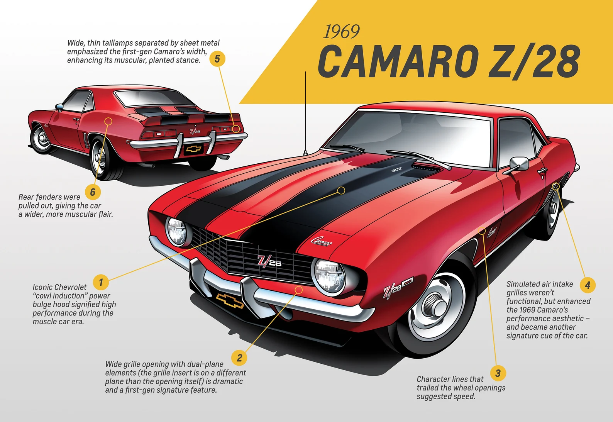

The first-generation Chevrolet Camaro is an American muscle car introduced by Chevrolet in the fall of 1966 for the 1967 model year. It rode on a brand-new rear wheel drive GM F-body platform and was available as a 2-door, 2+2 seat, hardtop, and convertible. The F-body was shared with the Pontiac Firebird for all generations. A 230 cu in Chevrolet straight-6 was standard, with several Chevy V8s available as options. The first-generation Camaro was built through the 1969 model year. Almost all of 1967–1969 Camaros were built in the two U.S. assembly plants: Norwood, Ohio and Van Nuys, California. There were also five non-U.S. Camaro assembly plants in countries that required local assembly and content. These plants were located in the Philippines, Belgium, Switzerland, Venezuela, and Peru.
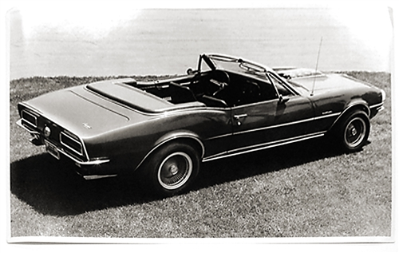
The Camaro's standard drivetrain was either a 230 cu in (3.8 L) straight-6 engine rated at 140 hp (104 kW) at 4400 rpm and 220 lb⋅ft (298 N⋅m) of torque at 1600 rpm; or a 327 cu in (5.4 L) and 307 cu in (5.0 L) (in January 1969) V8s, with a standard three-speed manual transmission. There were 8 (in 1967), 10 (in 1968), and 12 (in 1969) different engines available in 1967-1969 Camaros. There were several optional transmissions. A four-speed manual was available with any engine. The two-speed "Powerglide" automatic transmission was available all three years. The three-speed "Turbo Hydra-Matic 350" automatic became available starting in 1968. The optional automatic for SS 396 cars was the Turbo 400 three-speed automatic. A semi-automatic "Torque-Drive" two-speed transmission was available on six-cylinder models. There were a plethora of other options available all three years, including three main packages: The RS was an appearance package that included hidden headlights (the doors of which slid horizontally behind the grille when opened), revised taillights with back-up lights under the rear bumper, RS badging, and exterior bright trim. It was available on any model. The SS performance package consisted of a 350 cu in (5.7 L) or 396 cu in (6.5 L) V8s and chassis upgrades for better handling and to deal with the additional power. The SS featured non-functional air inlets on the hood, special striping, and SS badging. The Z/28 performance package was designed (with further modifications) to compete in the SCCA Trans-Am Series. It included a solid-lifter 302 cu in (4.9 L) V8, 4-speed transmission, power disc brakes, and two wide "skunk" stripes down the hood and trunk lid. The idea of offering a wide variety of packages and numerous options was to "blanket" Camaro's end of the personal car market segment with everything from an entry-level 6-cylinder engine to high-performance V8 engines.
1967
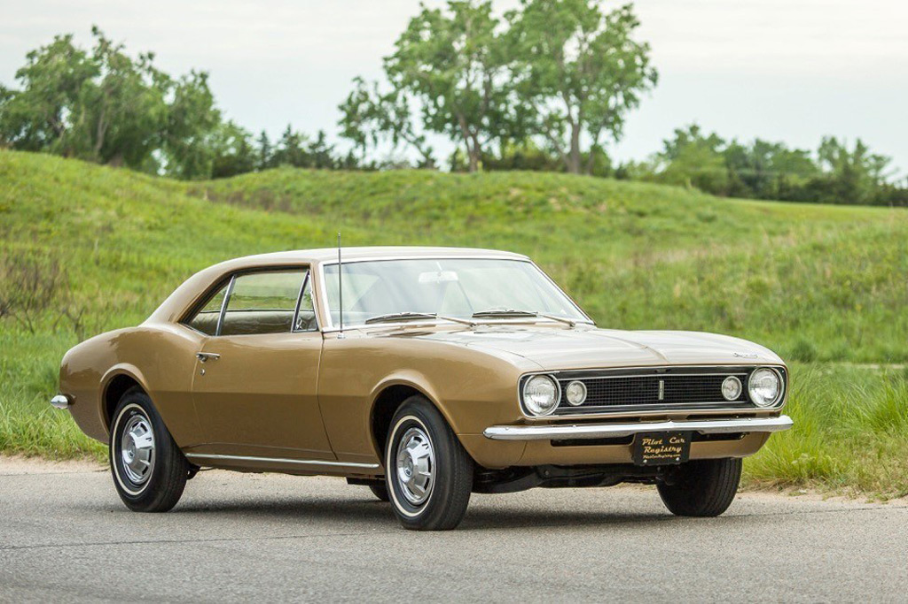
The body style for the 1967 Camaro was designed by the same team that designed the new 1965 edition of the Corvair. The Camaro shared the subframe / semi-unibody design with the 1968 Chevy II Nova. Almost 80 factory-installed and 40 dealer options, including three main trim packages, were available: the RS, the SS, and the Z/28. The SS included a 350 cu in (5.7 L) producing 295 bhp (299 PS; 220 kW) at 4800 rpm and 380 lb⋅ft (515 N⋅m) at 3200 rpm of torque; and the L35 and L78 396 cu in (6.5 L) big-block V8 engines producing 325 bhp (330 PS; 242 kW) or 375 bhp (380 PS; 280 kW) at 5600 rpm and 415 lb⋅ft (563 N⋅m) at 3600 rpm of torque were available. The SS featured non-functional air inlets on the hood, special striping, and SS badging on the grille, front fenders, gas cap, and horn button. It was possible to order both the SS and RS options, making it a RS/SS. In 1967, a Camaro RS/SS convertible with a 396 engine paced the Indianapolis 500.
1968

The styling of the 1968 Camaro was very similar to the 1967 design. With the introduction of Astro Ventilation, a fresh-air-inlet system, the side vent windows were deleted. Side marker lights were added on the front and rear fenders as part of safety requirements for all 1968 vehicles. It also had a more pointed front grille and divided rear taillights. The front running lights (on non-RS models) were also changed from circular to oval. The big-block SS models received chrome hood inserts that imitated velocity stacks and low-gloss black rear tail light panel. The rear shock absorber mounting was staggered to resolve wheel hop issues and higher performance models received multi-leaf rear springs instead of single-leaf units. A 396 cu in (6.5 L) producing 350 hp (261 kW) at 5200 rpm and 415 lb⋅ft (563 N⋅m) of torque at 3400 rpm big block engine was added as an option for the SS, and the Z28 appeared in Camaro brochures. The 427 cu in (7.0 L) was not available as a Regular Production Option (RPO). Chevrolet's Special Production Division had to convince Chevrolet's General Manager Pete Estes, but the General Manager only drove convertible vehicles, and the Z/28 was never produced as a convertible. A Central Office Production Order (COPO) was placed for the only Z/28 convertible Camaro built. The car was parked in the executive garage which Pete Estes had access to. Upon driving the vehicle, he promptly gave approval for promoting the Z/28. A 1968 Z/28 competed in the 1971 British Saloon Car Championship at Crystal Palace in a three-way battle for the lead, a race which was later featured in the "Sporting Moments" episode of BBC's 100 Greatest series.
1969
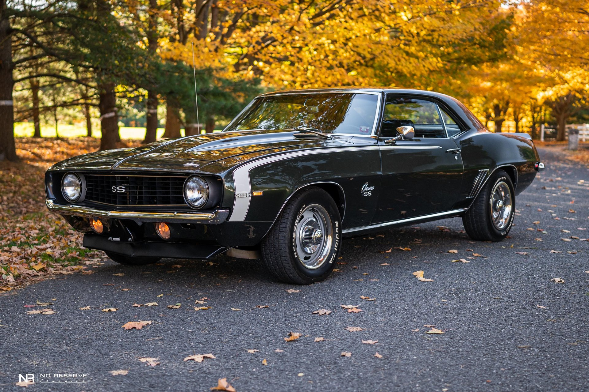
The 1969 Camaro carried over the previous year's drivetrain and major mechanical components, but all-new sheet metal, except the hood trunk lid and roof, gave the car a substantially sportier look. The grille was redesigned with a heavy "V" cant and deeply inset headlights. New door skins, rear quarter panels, and rear valance panel also gave the car a much lower, wider, more aggressive look. This styling would serve for the 1969 model year only.
To increase competitiveness in the SCCA Trans-Am racing series, optional four-wheel disc brakes with four-piston calipers were made available during the year, under RPO JL8, for US$500.30. This system used components from the Corvette and made for a major improvement in the braking capability and was a key to winning the Trans-Am championship. The option was expensive and only 206 units were produced.
The Rally Sport (RS) option, RPO Z22, includes a special black-painted grille with concealed headlights and headlight washers, fender striping (except when sport striping or Z28 Special Performance Package is specified), simulated rear fender louvers, front and rear wheel opening moldings, black body sill, RS emblems on grille, steering wheel and rear panel, Rally Sport front fender nameplates, bright accented taillights, back-up lights below rear bumper; also includes bright roof drip moldings on Sport Coupe. $131.65, 37,773 built. This option could be added to any other option (i.e., SS or Z/28), making the model an RS/SS or an RS/Z28. The Z28 option was still available with the 302 cu in (4.9 L) small block producing 290 hp (294 PS; 216 kW) at 5800 rpm and 290 lb⋅ft (393 N⋅m) of torque at 4200 rpm. It was backed by Muncie four-speed with a new-for-69 standard Hurst shifter and connected to a 12-bolt rear axle with standard 3.73 gears. The 302 featured 11:1 compression, forged pistons, forged steel crankshaft and connecting rods, solid lifter camshaft, and Holley carburetion on a dual-plane intake manifold. A dual four-barrel crossram intake manifold was available as a dealer-installed option.
Second-GEN
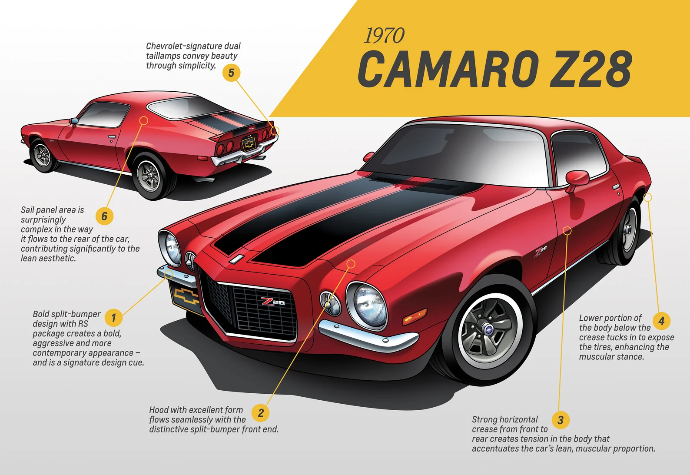
Dubbed "Super Hugger", the second-generation Camaro was an all-new car with its basic mechanical layout familiar and engineered much like its predecessor with a unibody structure utilizing a front subframe, A-arm and coil spring front suspension, and rear leaf springs. The chassis and suspension of the second generation were refined in both performance and comfort; base models offered significant advances in sound-proofing, ride isolation, and road-holding. Extensive experience Chevrolet engineers had gained racing the first-generation led directly to advances in second-generation Camaro steering, braking, and balance. High-performance configurations were initially available, but the marketplace changed as 1970s progressed with fuel crisis, higher insurance rates, and tightening emissions regulations. Major styling changes were made in 1974 and 1978; 1981 was the final model year for the second-generation Camaro.
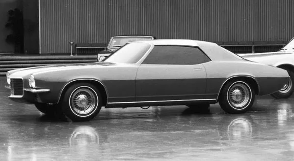
Concept
The second-generation Chevrolet Camaro is an American pony car that was produced by Chevrolet from 1970 through the 1981 model years. It was introduced in the spring of 1970. Build information for model 123-12487 was released to the assembly plants in February of that same year. It was longer, lower, and wider than the first generation Camaro. A convertible, which was available for the first generation, was unavailable for the second. GM engineers have said the second generation is much more of "A Driver's Car" than its predecessor.
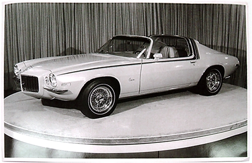
Convertible Concept
Most of the engine and drivetrain components were carried over from 1969, with the exception of the 230 cu in (3.8 L) six-cylinder — the base engine was now the 250 cu in (4.1 L) six, rated at 155 hp (116 kW). The 1970 Camaro SS 396 had the 396 cu in (6.5 L) L78 rated at 350 hp (261 kW). Starting in 1970, the big block V8s (nominally 396 cu in (6.5 L)) actually displaced 402 cu in (6.6 L), yet Chevrolet chose to retain the 396 badges, equipped with a single 4-barrel Holley carburetor that produced 375 bhp (380 PS; 280 kW) at 5,600 rpm and 415 lb⋅ft (563 N⋅m) at 3,600 rpm of torque. Two 454 cu in (7.4 L) engines (the LS6 and LS7) were listed on early specification sheets and in some sales brochures but never made it into production. Besides the base model, buyers could select the Rally Sport option with a distinctive nose and bumper, a Super Sport package, and the Z-28 Special Performance Package (priced at US$572.95) featuring a new high-performance LT-1 360 hp (268 kW) 380 lb⋅ft (520 N⋅m) of torque 350 cu in (5.7 L) V8. The LT-1, an engine built from the ground up using premium parts and components, was a much better performer overall than the previous 302 cu in (5 L) V8s used in 1967-69 Z-28s; greater torque and less-radical cam, coupled with the 780 cfm Holley four-barrel, permitted the Z-28 to be available with the 3-speed Turbo Hydramatic 400 automatic transmission as an option to the four-speed manual for the first time. The LT-1 engine in the 1970 Camaro Z-28 came from the Corvette. The new body style featured a fastback roofline and ventless full-door glass with no rear side quarter windows. Doors were wider to permit easier access to the rear seat, and new pull-up handles replaced the old handles, for which the lower button had to be pushed in to open the door. The roof was a new double-shell unit for improved rollover protection and noise reduction. The base model featured a separate bumper/grille design with parking lights under the bumper, while the Rally Sport option included a distinctive grille surrounded by a flexible Endura material along with round parking lights beside the headlights and bumperettes surrounding on both sides of the grille. The rear was highlighted by four round taillights similar to the Corvette. A convertible was not offered, making this the only Camaro generation not to offer one. The 1970 was the first Camaro offered with a rear stabilizer bar. The four-wheel disc brake option (RPO JL8 of 1969) was dropped. Inside, a new curved instrument panel featured several round dials for gauges and other switches directly in front of the driver while the lower section included the heating/air conditioning controls to the driver's left and radio, cigarette lighter and ashtray in the center and glovebox door on the right. New Strato bucket seats, unique to 1970 models, featured squared-off seatbacks and adjustable headrests, and the rear seating consisted of two bucket cushions and a bench seat back due to the higher transmission tunnel. The optional center console, with standard Hurst shifter, was now integrated into the lower dashboard with small storage area or optional stereo tape player. The standard interior featured all-vinyl upholstery and a matte black dashboard finish, while an optional custom interior came with upgraded cloth or vinyl upholstery and woodgrain trim on dash and console. The 1970 model was introduced to the assembly plants in February 1970, halfway through the model year. This caused some people to refer to it as a "1970½." model; all were 1970 models. The 1970 model year vehicles are generally regarded as the most desirable of the early second-generation Camaros, since the performance of following years was reduced by the automobile emissions control systems of the period and later the addition of heavy federally mandated bumpers.
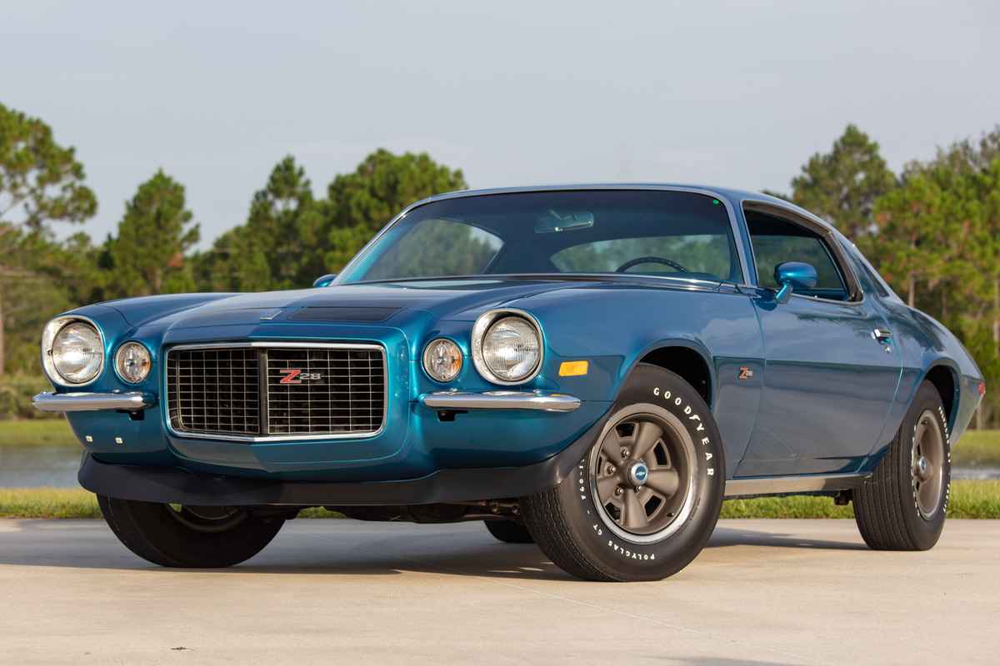
1970
The 1971 Camaro received only minor appearance changes from its 1970 counterpart. Inside, new high-back Strato bucket seats with built-in headrests replaced the 1970-only low-back seats with adjustable headrests. The biggest changes came under the hood, due to a GM-corporate mandate that all engines be designed to run on lower-octane regular-leaded, low-lead, or unleaded gasoline, necessitating reductions in compression ratios and horsepower ratings. The 250 cu in (4.1 L) straight-6, 307 cu in (5.0 L) V8, and two-barrel 350 cu in (5.7 L) V8 were virtually unchanged, as they were low-compression regular-fuel engines in 1970 and previous years. The LT-1 350 V8 used in the Z/28 dropped from 360 hp SAE gross to 330 horsepower (250 kW) SAE gross due to a compression ratio decrease from 11.0:1 to 10.3:1. The 350 c.i. engine in the 1971 Camaro Z28 produced 275 horsepower (205 kW) SAE net. The 396 (402 c.i.) V8 dropped from 350 to 300 horsepower (220 kW) SAE gross due to compression ratio drop from 10.25:1 to 8.5:1. The 402 c.i. engine in the 1971 Camaro SS 396 produced 260 horsepower (190 kW) SAE net. Production and sales dropped due to a 67-day corporate-wide strike at GM that coincided with the introduction of the 1971 models in late September 1970, along with a continued declining interest in the ponycar market fueled by skyrocketing insurance rates for high-performance cars. Rumors of the possible cancellation of the Camaro after 1972 began to surface and were nearly confirmed a year later when another worker's strike hit the assembly plant at Norwood, Ohio, which was the only plant building Camaros and Firebirds.
1971
The 1972 Camaro suffered two major setbacks. The UAW strike at a GM assembly plant in Norwood disrupted production for 174 days, and 1,100 incomplete Camaros had to be scrapped because they could not meet 1973 federal bumper safety standards. Some at GM seriously considered dropping the Camaro and Firebird altogether, particularly while the corporation was under pressure to adapt its vast number of makes and models to difficult new regulations for emissions, safety, and fuel economy. Others pointed out the fiercely loyal followings the cars enjoyed and were convinced the models remained viable. The latter group eventually convinced those in favor of dropping the F-cars to reconsider, and Chevrolet would go on to produce 68,656 Camaros in 1972. Only 970 SS 396s were produced in 1972, and this was the last year for the SS 396 and SS 350 models, as well as the last year the Camaro was offered with a Big Block from the factory. This year the badges changed from "Z/28" to "Z28". Horsepower ratings continued to drop, not only due to lower compression and tighter emissions controls but, beginning with the 1972 model year, a switch from gross (on dynamometer) to net ratings based on an engine in an actual vehicle with all accessories installed. With that, the 350 ci LT1 dropped from 330 gross horsepower in 1971 to 255 net horsepower for 1972 and the big-block 396/402 was now rated at 240 net horsepower compared to 300 gross horses in 1971.
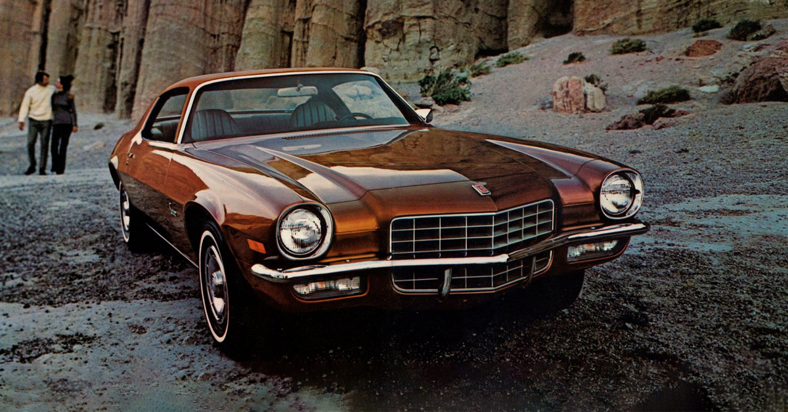
1972
The 1973 model year incorporated standard impact-absorbing front bumper system to meet new no-damage standards in 5 miles per hour (8.0 km/h) NHTSA legislation. The Rally Sport option, with its chrome bumperettes on either side of an impact absorbing urethane grill surround, continued for one more year due to creative bracing behind the front sheetmetal. A new Type LT model was offered in 1973, with a quieter and better-appointed interior, full instrumentation, Rally-style wheels, variable-ratio steering, sport mirrors, and hidden windshield wipers, among other upgrades. The Super Sport package was dropped, and the big block 396 cu in (6.5 L) V8 was no longer available. Power was down due to new emissions standards, with the top-rated 350 cu in (5.7 L) V8 producing 245 hp (183 kW; 248 PS) in the Z28. The engine was switched from solid-lifters to hydraulic tappets. Air conditioning became available as an option with this engine. The Z28 option could be ordered on both the sport coupe and LT models. When the Z28 and Type LT options were combined, the usual Z28 badges, stripes, and graphics were deleted. Other changes included a new console-mounted shifter for automatic transmissions similar to the shifter used in Pontiac Firebirds replacing the Buick-like horseshoe shifter of previous Camaros, and the reintroduction of power windows to the option list for the first time since 1969, with the switches mounted in the console.
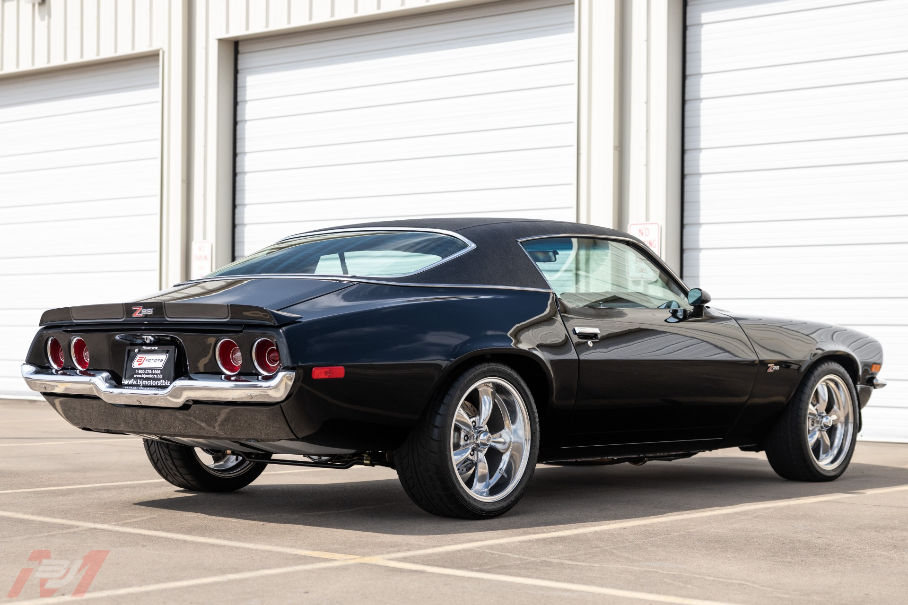
1973
The 1974 Camaro grew seven inches (178 mm) longer, thanks to new aluminum bumpers required to meet federal standards and a forward-sloping grille. Round taillights were replaced with a rectangular wraparound design. It was the last year to have a flat rear window, with thick roof pillars. All later years had slimmer roof pillars and a wraparound rear window for better visibility. This was the last year of the RPO Z28, which shared the same drive train and engine as in the previous year (1973), based on the Corvette L82 special high-performance engine (the Z28 would re-emerge in 1977 as its own model and no longer a RPO). Camaro sales increased to over 150,000 units, of which 13,802 were Z28s (the highest 2nd-generation Z28 production to this time) despite the energy crisis fueled by the Arab Oil Embargo. Two ponycar competitors were repositioned in the marketplace this year. Ford downsized the Mustang to an all new 1974 Ford Mustang II subcompact based on the Pinto that was designed for an era of high gas prices and fuel shortages resulting in 385,993 units produced for the model year. Mercury upsized the Cougar to an intermediate-sized personal luxury car to compete with the Chevrolet Monte Carlo and Pontiac Grand Prix. Other changes included Chrysler Corporation discontinuing the Plymouth Barracuda and Dodge Challenger during the course of the 1974 model year. Likewise, 1974 was the final year of the AMC Javelin, but a sporty AMX model would be reintroduced in 1978.
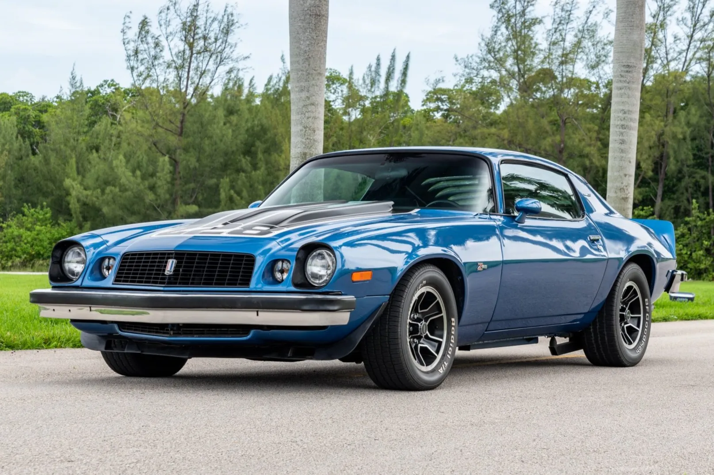
1974
The Z28 option was discontinued for 1975 despite an increase in sales to over 13,000 units in 1974. Optional engines continued to reflect the impact of emissions. Two 350 cid (5.7 L) V8s produced 145 hp (108 kW; 147 PS) 145 hp (108 kW) and 155 hp (116 kW) (Horsepower losses can seem a bit exaggerated compared to earlier cars, however, their power ratings were now net as opposed to the prior gross ratings. SAE net power ratings (used since 1972) were taken from the engine crankshaft as before, but now all accessories had to be attached and operating, and all emissions equipment and a full production exhaust system had to be in place. These power-robbing additions — along with stringent new emissions laws and the equipment they required — were instrumental in creating the vastly smaller power figures found in subsequent cars. The manufacturers themselves also sometimes intentionally underrated engines for a variety of motives, notably avoiding provoking the insurance companies and federal regulators into enacting undesirable policies, but also sometimes to prevent lower priced models from stacking up too well on paper against their own more profitable high-end products. A new wraparound rear window was introduced for 1975 and the Camaro emblem moved from the center of the grille to above the grillework and the "Camaro" nameplate was deleted from the rear decklid. Also new block letter "Camaro" nameplates replaced the previous scripts on the front fenders. Interiors were revised slightly with new seat trim patterns and bird's-eye maple trim replacing the Meridian grained walnut on the instrument panel of LT models. Announced for this year was the availability of a leather interior option in the Camaro LT, but never saw the light of day as no production cars were equipped with real hide seats. Other developments included the availability of air conditioning with six-cylinder engines and standard radial tires on all models. Power door locks were a new option for 1975. The Rally Sport option returned after a one-year absence, but amounted to little more than an appearance package. Despite the loss of the Z28, Camaro sales remained steady for 1975 at 145,770 units. With the demise of the other pony cars the previous year, Camaro and Pontiac's Firebird were now the only traditional pony cars left on the market, giving GM 100 percent penetration of this segment for the first time ever. Also, despite General Motors' policy against factory-sponsored racing efforts, Camaro began to make a name for itself on the track on the new International Race of Champions (IROC) series with many top drivers winning trophies from behind the wheel of a Camaro year after year until the late 1980s.
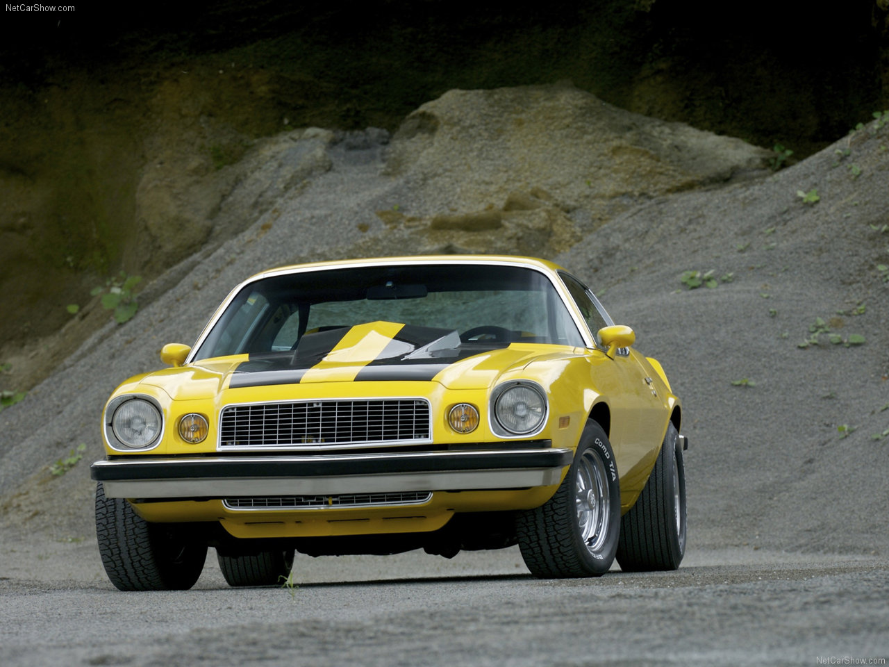
1975
For 1975, a catalytic converter was added to the exhaust system of all US-market GM passenger cars, including the Camaro. The "Air Injection Reactor" secondary air injection system was still present. The catalytic emission control system was more efficient at reducing emissions than the previous non-catalytic system, and allowed engines to be retuned for improved drivability and fuel economy. The catalytic converter and GM High Energy electronic ignition were advertised among the components of "Chevrolet's new Efficiency System" which was promoted to offer other benefits to owners of 1975 models versus comparable 1974 models that included extended maintenance intervals from 6,000 to 7,500 mi (12,070 km) for oil/filter changes and spark plugs that lasted up to 22,500 mi (36,210 km) compared to 10,000 mi (16,093 km) on 1974 models.
Only minor appearance changes highlighted the 1976 Camaro, most notably a brushed metal insert in the rear tail section on the LT model. The 250 cubic-inch six-cylinder remained the standard engine in the sport coupe and a new 140 hp (104 kW; 142 PS) 305 cubic-inch V8 became the standard engine in the LT and base V8 option in the sport coupe. The larger 350 cubic-inch V8 was now only available with a four-barrel carburetor and 165 hp (123 kW; 167 PS). Power brakes became standard on V8 models this year. The Camaro's popularity was soaring. Sales totals jumped significantly for 1976, the best year yet for the second generation, and were to improve even more dramatically as the decade progressed.
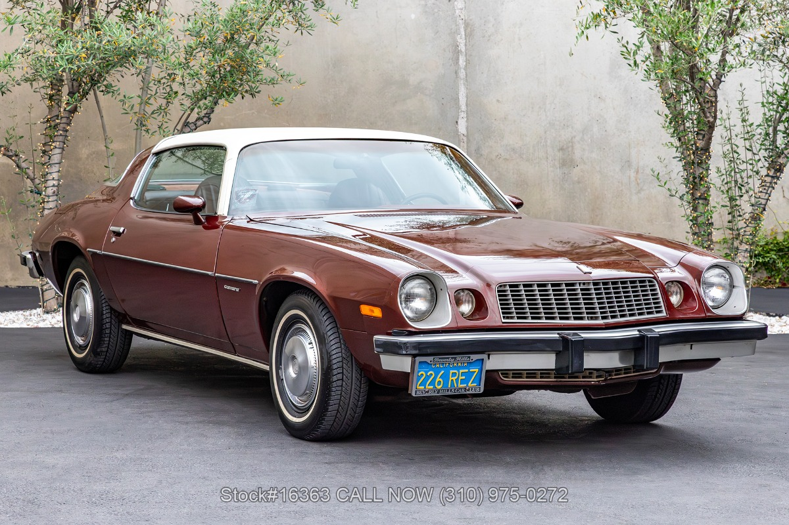
1976
The Z28 was reintroduced, as a model and not an RPO, to the buying public in the spring of 1977 as a 1977½ in response to increasing sales of Pontiac's Trans Am, which sold over 46,000 units in 1976 and accounted for half of all Firebird sales that year.The revived Z28 was powered by a 350 cu in (5.7 L) V8 with four-barrel carburetor producing 185 hp (138 kW; 188 PS) (175 hp (130 kW; 177 PS) with California emissions equipment), with most cars sold equipped with air conditioning and an automatic transmission. The engine no longer came with the 4-bolt main bearing engine block, forged crank, forged pistons, big valve heads, and performance camshaft that had been part of the RPO Z28 Special Performance Package, the engine that had been shared with the Corvette LT-1 and L82 top-performance 350 engines from 1970 to 1974. The LM1 engine was the most powerful Camaro engine and only available in the Z28 model. The engine came with better tuned intake and exhaust, shared with most Chevy passenger cars. The cars were also available with a Borg-Warner Super T-10 4-speed manual transmission. Intermittent wipers were offered as a new option and the 250 cu in (4.1 L) I-6 became the standard engine for both the sport coupe and luxury LT models. The 145 hp (108 kW; 147 PS) 305 cu in (5.0 L) continued as the base V8 and the four-barrel 350 cu in (5.7 L) that was optional on sport coupe and LT models was uprated to 170 hp (127 kW; 172 PS). Due to General Motors' engine sharing program, the 350 CID Chevrolet engine was also used by Oldsmobile. This year the optional "Bumperettes" were offered for the LT models (front bumper only) and were mandatory for all Camaro models sold in the state of California. Output set a record for the second-generation Camaro, with 218,853 coupes produced. The Camaro outsold Ford's Mustang for the first time ever. For 1977 Z28 production was around 13,000 cars with a 195 hp (145 kW; 198 PS) 350 engine.
1977
For the 1978 model year, the Camaro featured a new body colored urethane front and rear bumpers. Z28s featured a non-functioning hood scoop with outlining decal around the intake. The taillights were updated to include amber turn signals. Sales topped all previous years with 272,631 units, of which 54,907 were the Z28 model. Available models included the base Sport Coupe, Type LT, Z28, and the return of the Rally Sport. The Rally Sport (not badged RS as in previous years) featured a standard two-tone paint treatment. The Z28 models included a stripe package that was not deletable and featured the LM1 a 350 cu in (5.7 L) V8 with a four-barrel Quadrajet carburetor that produced 185 hp (138 kW; 188 PS) and 280 lb⋅ft (380 N⋅m) of torque coupled to either a 4-speed manual or a TH-350 3-speed automatic. Another first for 1978 was T-Tops, although they were a regular production option on the 1977 Pontiac Firebird and were introduced on the 1976 Pontiac Trans Am 10th Anniversary Limited Edition.
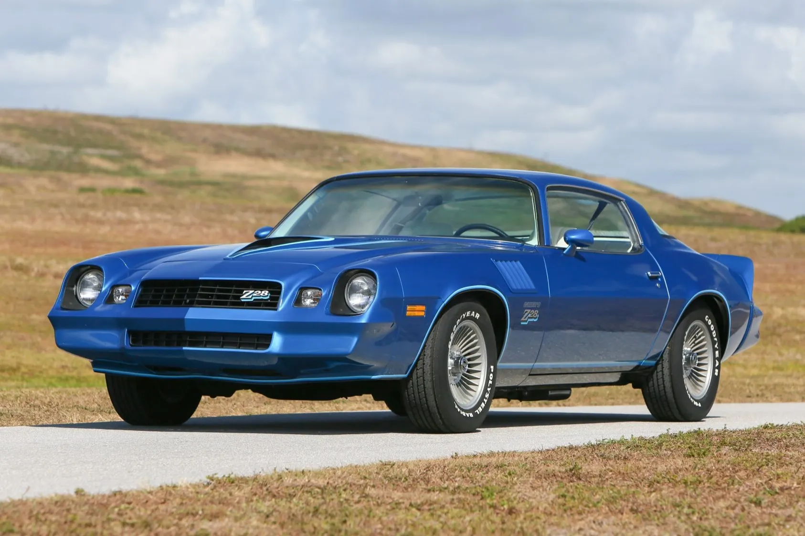
1978
The biggest changes for 1979 were the introduction of the luxury-oriented Berlinetta model, replacing the Type LT, and a restyled instrument panel with a much flatter appearance than the previous wraparound design (although the gauges themselves remained in the same places as before). The base models, RS and Z28 remained, the Z28s now came with a front spoiler and fender flares much like its Pontiac Trans Am twin had, and now came with "Z28" decals that ran from the beginning of the front flares to the bottoms of the doors. Electric rear window defroster became optional this year, replacing the old blower type. Sales for 1979 were the highest ever for any generation Camaro before or since, numbering 282,571 units. Engine choices remained with the 250 I6 standard in the base and RS models, with the 305 2bbl being an option and standard on the Berlinetta.
1979
For 1980 the aged 250 cu in (4.1 L) inline-six was replaced with a 229 cu in (3.8 L) V6 engine, 231 cu in (3.8 L) in California, a first for Camaro. The 120 hp (89 kW; 122 PS) (4.4 L) 267 cu in V8 engine became an option on the base, RS and Berlinetta models this year. The Z28 hood included a rear-pointing raised scoop (air induction) with a solenoid operated flap which opened at full throttle, allowing the engine to breathe cooler air. A federally mandated 85 mph (137 km/h) speedometer also debuted this year, down from 130. Z28s had new optional grey 5-spoke rims (later used on the 1986–1988 Chevrolet Monte Carlo SS), a unique upper and lower front grill and smaller revised graphics on its doors. The side scoops were also changed from a louvered design to a flatter one with a single opening. The 350 cu in (5.7 L) V8 was now only available on the Z28 this year.
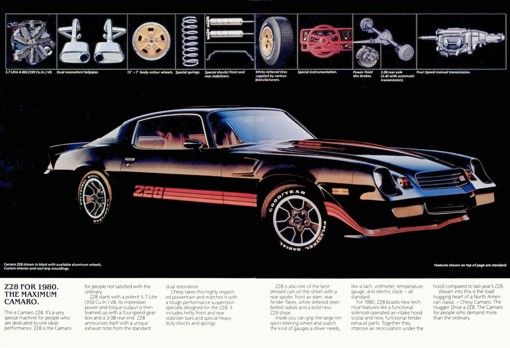
1980
The 1981 model was nearly unchanged from 1980 and would be the last model year for the second-generation Camaro. The Z28 was still powered by a 350 cu in (5.7 L) V8, however due to new emissions regulations the engine was now equipped with a CCC (Computer Command Control) unit for the first time. This predecessor to modern engine control modules had an oxygen sensor, an electronically controlled carburetor, a throttle position sensor, coolant sensors, a barometric pressure sensor, a Manifold Absolute Pressure sensor (MAP), and a check engine light on the dash. The transmission was now equipped with a lockup torque converter, controlled by the CCC as well. The CCC could also be used as a self-diagnostic tool. However, as the goal of this change was strictly emissions reduction, horsepower dropped to 175 hp (130 kW; 177 PS). This engine was now only available with an automatic transmission, while the four-speed manual versions had the 165 hp (123 kW; 167 PS) 305 cu in (5.0 L), which was the only engine offered in Z28s sold in California. Canadian models, however, could still get the 350 and 4-speed combination, and were not equipped with a CCC. Canadian 1981 Camaros were thus identical to 1980 US model. RS models were dropped this year, but the RS designation would reappear in 1989. Total production had dropped down to 126,139 from a high of 282,571 in 1979.
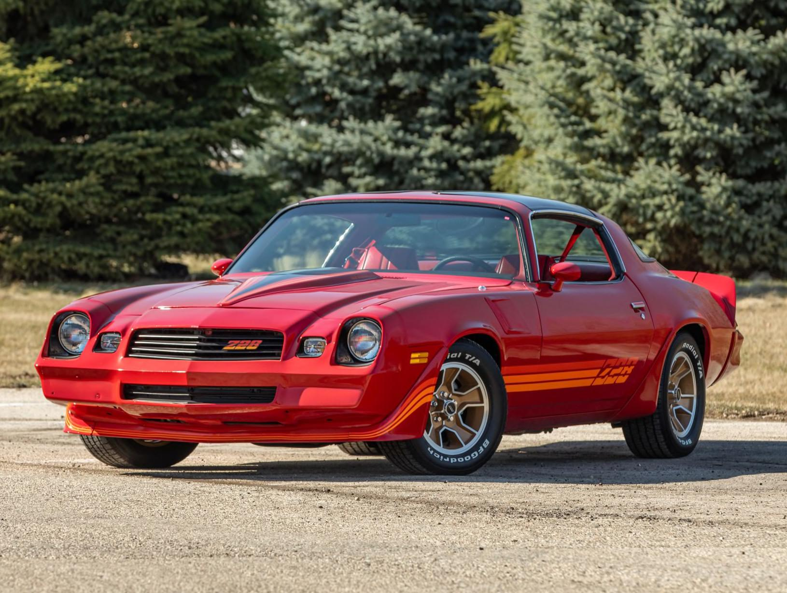
1981
Third-GEN
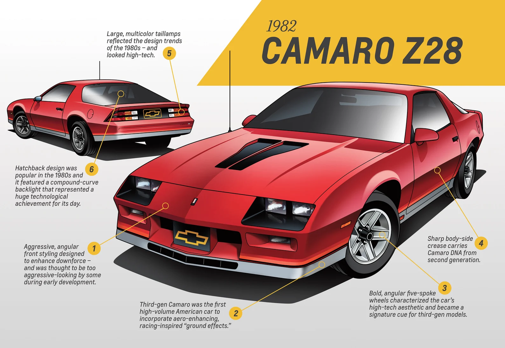

The third-generation Chevrolet Camaro is an American pony car which was introduced for the 1982 model year by Chevrolet. It continued to use General Motors' F-body platform and produced a "20th Anniversary Commemorative Edition" for 1987 and "25th Anniversary Heritage Edition" for 1992. These were also the first Camaros with factory fuel injection, four-speed automatic transmissions, five-speed manual transmissions, four-cylinder engines, 16-inch wheels, and hatchback bodies. For 1987 a convertible Camaro was reintroduced, converted by ASC in relatively small numbers. The third-generation Camaro continued through the 1992 model year. The Camaro's design owed nothing to previous generations. The large and complex rear window reflected recent advances in car glass design. The front windshield reclined at 62 degrees, thus breaking an internal GM rule limiting such angles to sixty degrees. The rear seat folded down to expand the luggage compartment, which was accessed through a large rear hatch.
The Third-Generation Camaro was released for sale in December 1981, beginning production on October 12, 1981. The 1982 model introduced the first Camaros with a hatchback body style, and such options as factory fuel injection, and a four-cylinder engine. The Camaro Z28 was Motor Trend magazine's Car of the Year for 1982. Three models were available: Sport Coupe, Berlinetta, and Z28. 173,000 Camaros were sold in the United States in 1982. 12 percent of buyers took the four-cylinder, 37 percent the V6, while 51 percent opted for the V8. The Sport Coupe came standard with the 2.5 L (151 cu in) LQ9 four-cylinder engine. The 2.8 L (173 cu in) LC1 V6 and the 5.0 L (305 cu in) LG4 V8 were optional. Dog dish-style hubcaps were standard; full wheel covers were optional as were steel, five-spoke 14x7-inch body-colored rally wheels. The Berlinetta came with the standard 2.8 LC1 V6 or the optional 5.0 LG4 V8. This package also sported unique 14x7-inch finned aluminum wheel with gold accenting and a 'Berlinetta' center cap. Its own lower-body pinstriping, gold 'Berlinetta' badging, and headlamp pockets were painted in an accent color. The taillights got a gold and black horizontal divider bar. The interior came standard with custom cloth interior, a rear storage well cover, and additional carpeting on rear wheelhouses. It also came standard with additional body insulation and full instrumentation. The Z28 came standard with the 5.0 L LG4 4-bbl V8 rated at 145 hp (108 kW) and was available with either a four-speed manual or three-speed TH200 lockup automatic transmission. The optional LU5 twin TBI 'Cross Fire Injection' 5.0 L (305 cu in) with functioning hood scoops was rated at 165 hp (123 kW) and was only available with an automatic transmission. The new Camaro received positive reviews for its styling and handling, but was also criticized for the low power ratings for the Camaro Z28. The Z28s included lightweight fiberglass SMC hoods with functional hood air induction flaps on RPO LU5 cars. The Z28 had a different nose, a three-piece rear spoiler and front, side, as well as rear lower body valances in silver or gold. Just above the valance was a three-color lower body stripe that encircled the car. Headlamp pockets on the Z28 were black. Standard were new 15x7-inch cast-aluminum five-spoke wheels accented with silver or gold. Z28 badges appeared on the right rear bumper and on the side valances. On early models, if the "Conteur" sport seats were selected as an option, the passenger seat was purposefully a mismatched high-back bucket seat design, due to production shortages of the passenger seat. The Camaro Z28 was the pace car for the 1982 Indianapolis 500 race, and over 6,000 appearance replicas were sold through Chevrolet dealers. The edition featured special two-tone silver/blue paint and special striping, orange pin-striping on 15-inch (380 mm) Z28 wheels, and a silver/blue interior with six-way Lear-Seigler manually adjustable seating. Engine choices in the pace cars were the same as the regular production Z28. The car that actually paced the event was equipped with a highly-modified, all-aluminum 5.7 L V8 that was not available on the replica cars. At the 1982 Geneva Motor Show, a special European specification version was shown, the Camaro Z28E. The "E" stood for "Export" and it received British National Type Approval in 1982. The Z28E received the 157 PS (155 hp; 115 kW) DIN carburetted 5-liter V8, while the 108 PS (107 hp; 79 kW) 2.8-liter V6 was soon added to the lineup.
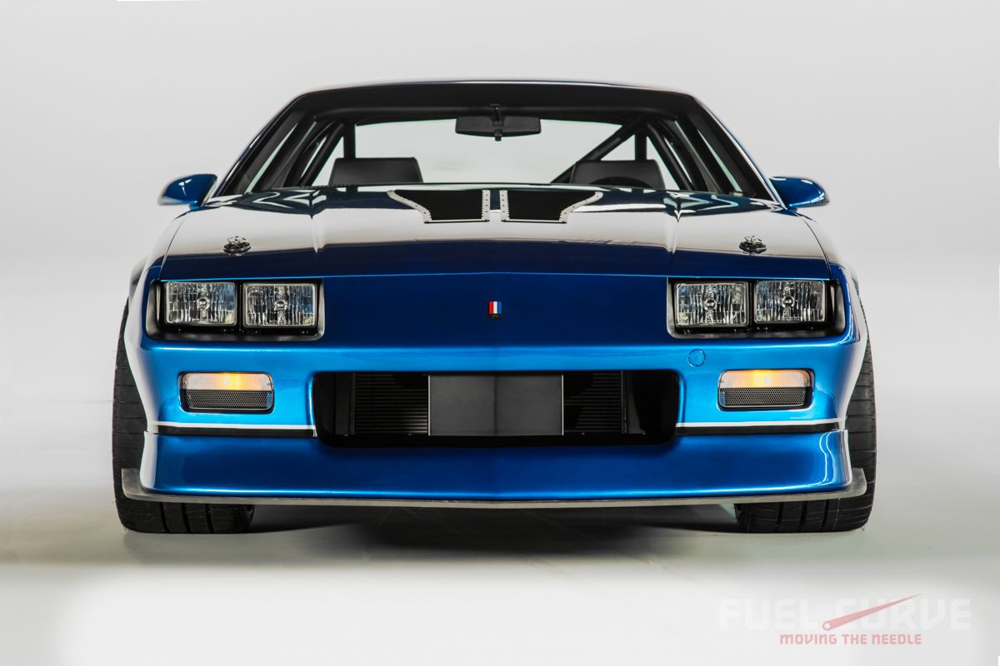
1982
The Z28 engines were changed for 1983: the LU5 Crossfire 305 V8 was rated at 175 hp and was supplemented in April 1983 by an all-new 5.0 L L69 4 bbl 190 hp (142 kW) High-Output (HO) V8. This engine was only available with a manual transmission in 1983. Due to its late introduction, 3,223 L69 V8s were sold for the 1983 model year. Transmissions were upgraded for 1983. A Borg-Warner 5-speed manual transmission replaced the previous 4-speed. A 4-speed automatic transmission with overdrive replaced the 3-speed automatic transmission in the Z28. The TH700-R4 automatic overdrive was also available on the base coupe and Berlinetta, but was not available with the L69 H.O. engine in the Z28 for 1983. Aside from the new transmissions, base coupe and Berlinetta carried on as in 1982 with very little change other than newly available colors.
1983
The dashboard pad on all models received a revised shape and finish. In the Berlinetta, the standard instrument cluster was replaced by electronic readouts, including a bar-graph tachometer and digital speedometer. The new dash came with an overhead console and pod-mounted controls for turn signals, cruise-control, HVAC, windshield wiper, and headlights. The radio was mounted inside a pod on the console that could swivel toward the driver or passenger. Drivetrain changes included the discontinuation of the LU5 305 Cross Fire V8, and the addition of a hydraulic clutch linkage on manual transmission cars. The L69 H.O. Z28 became available with an automatic transmission for the first time. The Z28's body and features remained mostly unchanged, except the fiberglass SMC hood was replaced with a steel version. Road & Track selected the 1984 Camaro/Firebird as one of twelve best cars in the world and in the Best Sports GT category in the $11,000 to $14,000 range. Car and Driver picked the 1984 Camaro Z28 as the best handling car built in the United States.
1984
For 1985, Chevrolet introduced the IROC-Z version that was named after the International Race of Champions. Offered as an option package on the Z28, the Camaro IROC-Z featured an upgraded suspension, lowered ride height, specially valved Delco-Bilstein shocks, larger diameter sway bars, a steering/frame brace known as the "wonder bar", a special decal package, and an optional Tuned Port Injection system taken from the Chevrolet Corvette. It also shared the Corvette's Goodyear "Gatorback" unidirectional tires in a 245/50/VR16 size vs. the Corvette's 255/50/VR16 size, and received unique new aluminum 5-spoke 16-by-8-inch wheels. The new wheels were designed with different offsets front and rear, resulting in the words "Front" or "Rear" cast into the wheels to distinguish which wheel went where. The Camaro IROC-Z was on Car and Driver magazine's Ten Best list for 1985. The 305 c.i. 5.0-liter TPI LB9 was rated at 215 hp (160 kW), with the 4-bbl 305 LG4 at 155 hp, and the 4-bbl High Output 305 L69 at 190 hp (142 kW). A total of 2,497 L69 IROC-Z models were made for 1985. The LB9 was available only on the Z28 and the IROC-Z model with the TH700-R4 automatic transmission. A total of 205 IROC-Zs equipped with the LB9 305 with the G92 (Performance Axle Ratio) option were made in 1985. The G92 option upgraded the rear axle gear ratio from 3.23 to 3.42. Also new for 1985, all Camaros featured refreshed noses, and new deeper valances and front spoiler for the Z28 and the newly introduced IROC-Z. The speedometers no longer had the unique double-pointed needle that simultaneously read mph and km/h: they were replaced by conventional single-pointer 85 mph (137 km/h) units. For 1985 a (1C5) RPO California IROC-Z was also made, Chevrolet's California Marketing Group came up with the idea and it was for sale in California only. A total of 250 black and 250 red examples were produced. They were all equipped with the 5.0 TPI LB9 engine and TH700-R4 automatic transmission. All came equipped with the IROC-Z fog lights, wheels and ground effects, but with the base Camaro's hood (no louvers), rear decklid (no spoiler), and no exterior decals.
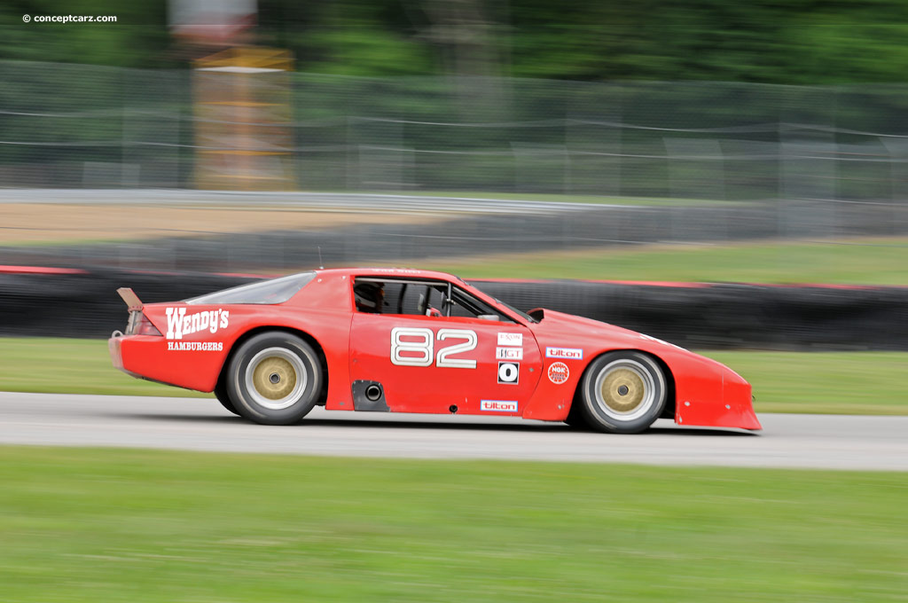
1985
A newly required Center High Mounted Stop Lamp (CHMSL) was installed on the Camaro. 1986 was the only year to see this attached to the outside hatchback glass on base model Sport Coupes, Z28s, and IROC-Zs except for 1987 base models that did not have a spoiler. This was the final year for the L69 5.0 305 HO 4-bbl option, of which 63 were built for racing in Canada's Player's series and 11 for public sale, making a total of 74. The 2.8 L V6 was now the standard engine in the base model, replacing the 2.5 L I-4 model. The 305 TPI LB9 horsepower rating dropped from 215 hp (160 kW) to 190 hp (142 kW) in the IROC-Z models. All V8 engines received a new one-piece rear main seal. Braking performance was 139 feet from 60mph. 1986 would be the final year for the Berlinetta trim level.
1986
The 350 TPI engine with automatic and 305 TPI with 5-speed manual transmission were available for the first time in the IROC-Z. The new 350 (RPO code L98) was available only in the IROC-Z with an automatic transmission. The TPI 350 motor was visually distinguishable from the TPI 305 as the bumper cover decal had "5.7L" added to the "Tuned Port Injection" decal. It can also be determined by checking the VIN (8th character, F=305, 8=350). The 305 TPI equipped with automatic transmission came with 190 hp, while the Manual 305 TPI got a 215 hp (160 kW) rating. The 350 L98 gave a boost to 225 hp at 4,400 and 330ftlb at 2,800. All V8 engines received hydraulic roller lifters and a new valve cover/head design. Valve covers featured new sealing and center bolts in the valve covers. Heads featured a new raised lip for improved valve cover sealing and the two center intake bolts were changed from 90-degree orientation to 72 degrees. G92 and L98 cars got the Borg-Warner HD 7.75-inch (197 mm) four pinion rear end, produced for GM's Holden of Australia (Firebird WS6 cars went to this unit in 1986). These units can be identified by their 9 bolt (rather than 10) differential cover that has a rubber drain plug. The Borg-Warner logo is also cast into the bottom of the differential case. This rear axle came with tapered rather than straight roller bearings and a cone-clutch rather than disc-clutch limited-slip unit. These units came painted black from the factory while most others were bare metal. All 1987 350 TPI L98 IROC-Zs required 3.27 gears, J65 rear disc brakes, G80 limited-slip differential, and a KC4 engine oil cooler. The largest visual change this year was the CHMSL (third brake light) was now mounted inside the rear spoiler instead of on top of the rear hatch (except the base coupe without the spoiler option - on those cars it remained on top of the hatch like the previous year). The Berlinetta was no longer available this year, replaced with a new LT model, while the base Camaro and Z28 continued as before. 145 mph (233 km/h) speedometers became standard in the IROC-Zs and Z28s with tuned port injected engines while the carbureted Camaro models and 2.8 liter V6 retained the 85 m.p.h. speedometer. Other changes included a Camaro convertible that was introduced for the first time since 1969 as a regular production option. Available on the Sport Coupe, LT and IROC-Z, the conversion was performed on t-top equipped Camaros by American Sunroof Company (ASC). A total of 1,007 were produced in the first year of production. The 1987 model year marked the 20th anniversary of the Camaro and the convertibles were considered the anniversary editions and included a dash badge that read "20th Anniversary Commemorative Edition". Some 1987 T-Top models were made into convertibles by ASC after the customer took delivery. This is why there are some convertibles with the body VIN code of 2, meaning they were coupes, not convertibles (which have a body VIN code of 3). This was also the last year of production at GM's Norwood, Ohio, facility as sales continued to decline consolidating Camaro assembly to the Van Nuys factory located in Southern California.
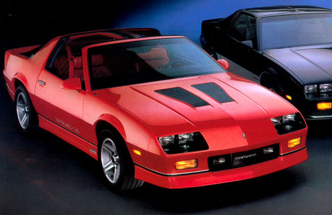
1987
The Camaro line was greatly simplified this year, starting with discontinuing the slow-selling LT model, and dropping the base Z28. The IROC-Z package proved popular and the package became standard on Z28s. This resulted in two models remaining, the base coupe and the IROC-Z. Without the Z28 to bridge the gap between the base Camaro and the flagship IROC-Z, the previously standard aluminum 16-inch 5-spoke wheels were now an option - "base" IROCs now got the previous year Z28's aluminum 15-inch 5-spoke wheels (which also became standard on the base coupes) and P215/65-15 tires. Also, the old Z28's ground effects and spoilers were now standard on the base Camaro coupes. Base models received a new raised spoiler for the first half production year. All engines were fuel-injected this year; the 2.8 (173) running 135 HP at 4,900 rpm and 160 lb.ft at 3,900 rpm, the 5.0L 305 cid V8 gained throttle-body injection, bringing net horsepower to 170; the 305 cid TPI manual transmission models were rated at 220 HP at 4,400 rpm and 290 lb.ft at 3,200 rpm, Automatic at 195 HP at 4,000 rpm and 290 lb.ft at 2,800 rpm and the 350 cid TPI got a small boost to 230 HP at 4,400 rpm and 330 lb.ft at 3,200 rpm. G92 (performance axle ratio) available only on IROC-Z with 5.0 TPI (LB9). All 1987 350 TPI L98 IROC-Zs came standard with the 3.27 BW rear end and everything that was included with G92 but did not have the G92 RPO code because it was not mandatory; this changed in 1988 however when a 2.77 rear was standard and G92 had to be specified to get the 3.27 differential. The IROC-Z was also treated to some small cosmetic changes. The "Z28" logos on the ground effects below the doors and on the rear bumper changed to read "IROC-Z". The large IROC-Z call-outs on the door moved from the front of the doors to the back, to put some space between the logos. Option code DX3 offered buyers the option of deleting the IROC-Z's door decals and stripes for a $60.00 credit. Optional 16-inch aluminum wheels were redesigned with two lines instead of one large line in each spoke, and center caps backgrounds changed from black to silver. Dash badges on the IROC still read "Z28" on top and "IROC-Z" below. The VIN code 8 is the engine code for a real TPI 5.7L IROC.
1988
The 1989 model year signified the return of the RS designation (last used in 1987 on a limited-edition California only model). The Rally Sport was now the base model featuring body ground effects mimicking the IROC and the previous Z28 but with the 2.8 V6 fuel-injected engine as standard with the 305 as an option. The raised rear spoiler that became available in 1988 on the base coupes was short-lived and done away with for this year. The engine ratings carried over from '88 with the addition of IROC-Z Coupes had a new dual catalytic converter exhaust option N10 that was standard with the G92 option only available on the 305 TPI motor with a manual transmission and the 350 TPI only available with the TH700-R4 automatic. 1989 was also the last year any third-gen with the B2L RPO 350 TPI L98 engine could be ordered in combination with the CC1 RPO removable T-Top roof panels. Power ratings also varied in the 305 from 170 hp (standard RPO L03) to 230 hp (RPO LB9 with manual transmission and RPO N10 dual catalytic converter exhaust) and a boost to 240 hp for the 350 with RPO N10 respectively. IROC-Zs with the TPI 350 had the 2.77 rear axle ratio as in the previous year, but the optional RPO G92 Performance Axle package modified the ratio to 3.27 for the TPI 350, and 3.45 for the TPI 305 with manual transmission. RPO G92 also included the aforementioned dual-converter exhaust; 4-wheel disc brakes (RPO J65); engine oil cooler; P245/50ZR16 Goodyear Eagle unidirectional tires; a 145 mph (233 km/h) speedometer; and a tachometer with a 5,500 rpm redline. A total of 1,426 IROC-Z coupes were equipped with the Performance Axle package in 1989. To take an IROC-Z coupe to the maximum performance extreme in 1989, when the G92 Performance Axle was ordered with no air conditioning (C41), RPO code 1LE was automatically triggered. This included extra equipment intended to make the IROC-Z more competitive in SCCA Showroom Stock road racing events: larger 11.65-inch (296 mm) rotors with 2-piston aluminum calipers from PBR; an aluminum driveshaft; a special baffled fuel tank; specific shock absorbers; and stiffer suspension bushings. The fog lamps were also deleted. The 1LE was simply an option combination, not a separate package or model that dealers were aware of the existence of, resulting in 111 cars built with 1LE equipment in 1989.
1989
The 1990 model year finished the lowest production to date (35,048), due to a truncated 1990 model run followed by the early introduction of the facelifted 1991 models. 1990 also marked the final year for the IROC-Z; Chevrolet had decided not to renew its contract with the International Race of Champions. This year was the first year for an airbag to be offered in any F-body. The new airbag came along with a new "half-moon" gauge cluster, that was offered only in 1990–1992 Camaros. The sharp edges on the dash surfaces were rounded and the lettering on gauges switched to yellow from white. 1990 was a distinguishable model year as it was the only third-generation Camaro that did not feature the updated ground effects of the 1991–1992 models but did have the newer interior/dash features. The 2.8 L V6 was upgraded to the 3.1 L V6. The RPO code 1LE was again available in 1990, triggered as in the previous year by RPO G92 Performance Axle combined with no air conditioning on the IROC-Z coupe. Only 62 Camaros were built with 1LE equipment in 1990. The Last 1990 Camaro Rolled off the line on December 31, 1989. Camaros in IROC-Z trim that were equipped with the 5.7 TPI Motor received a slight horsepower increase to 245 at 4,400 rpm and torque numbers also rose to 345 at 3,200 rpm.
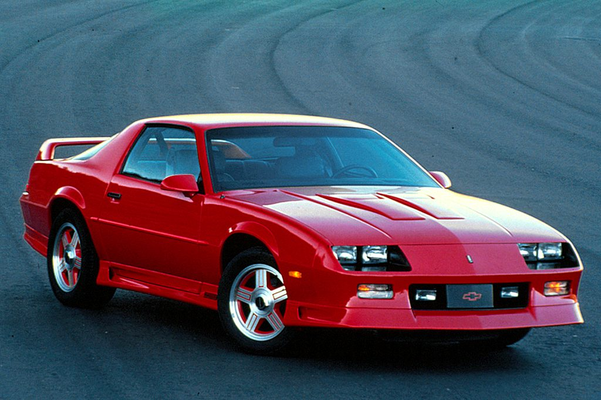
1990
Production for the 1991 Camaro started in February 1990. Big changes occurred, as all Camaros received a facelift in the form of a ground effects package for not only RS but also the Z28 models, while the IROC-Z was no longer offered. The Z28 also featured a high rise spoiler and non-functional hood "blisters". The CHMSL was relocated from the spoiler to the top of the Hatch again like the 1986 models, except the housing was now on the inside rather than the outside of the hatch. The Convertible still retained the spoiler mounted 3rd brake light. The 1991 Z28 also received a new wheel design to accent the new body. The B4C "Special Service" option was made available to law enforcement, the government, and military agencies. The B4C amounted to little more than a Z28 powertrain and suspension in the RS. (Car Craft Magazine refers to the B4C as a 1LE equipped with air conditioning; although this is slightly erroneous because in 1991, the large brakes with PBR calipers from the 1LE package were not included with B4C.) Just under 600 B4C Camaros were sold for 1991. Power ratings on the 350 TPI were as follows; 245 hp (183 kW) at 4,400 rpm and 345 lb⋅ft (468 N⋅m) at 3,200 rpm. Power rating on the 305 TPI motor were as follows; 230 hp (172 kW) at 4,200 rpm and 300 lb⋅ft (407 N⋅m) at 3,200 rpm. Power rating on the 305 TBI stayed same at 170 hp(127 kW) at 4,000 rpm and 255 lb⋅ft (346 N⋅m) at 2,400 rpm. Rumors say that these numbers were slightly underrated by GM, but this has not been investigated. Beginning with the 1991 model year, GM pioneered some modified assembly techniques with the F-body Camaro and Firebird which were carried forward into the fourth generation. Different seam sealers, structural adhesives, and body assembly techniques were employed in key areas in an effort to reduce squeaks and rattles and improve the perception of quality. The SCCA Showroom-Stock-ready 1LE package continued with similar equipment to previous years and was again triggered automatically by the G92 Performance Axle option combined with the C41 basic ventilation system (no air conditioning) on the Z28 coupe. Production of the 1LE increased to 478 units.
1991
1992 was the final year of the third generation Camaro. A "25th Anniversary Heritage Edition" option had been planned with Corvette aluminum cylinder heads, tubular exhaust headers, and 6-speed manual transmission, but this was scrapped in favor of a "Heritage Package" option (RPO Z03) which amounted to nothing more than a graphics package of badges and rally stripes. All 1992 Camaros received a "25th Anniversary" badge on the dashboard. The 1992 version of the Camaro B4C (Special Service Package) got the addition of 1LE brakes. A total of 589 B4Cs were sold. The B4C option was also deemed popular enough to be carried on to the fourth-generation model. Some TPI 1992 Camaros received some of the "leftovers" from its Corvette cousin, which switched from Tuned Port Injection to the new LT1 engine series in 1992. They received the rough texture, cast aluminum style, intake runners from the TPI Corvette instead of the regular Camaro smooth tube ones. In some cases, they were built with black painted valve covers instead of the normal silver valve covers. Some also received a blank throttlebody plate, like the LT1, instead of the normal plate with "Tuned Port Injection" script. The change was purely cosmetic, performance remained identical to the previous year. The RPO 1LE option combination, identical to the previous year in specification and option requirements, had its highest production year of the third generation Camaro, with 705 cars so equipped. As mentioned, the 1LE brakes were included with B4C in 1992, accounting for 589 of the 705 built. This means that only 116 "true" 1LE-only cars (A/C delete, non-Special Service Package) were built for the year. The vast majority of the 1LE cars built during the 1989-1992 period were very sparsely equipped vehicles. Since they were intended for racing, where extra weight is a disadvantage and interiors are often gutted after purchase, most were very lightly optioned. The majority of 1LE Camaros had the base interior, with no power options, cruise control, or even floor mats. Some were even built without radios (201 cars were built as "radio delete" in 1992). This was also the last year of production of the Camaro at the assembly plant in Van Nuys, California (and the United States as a whole until 2015). The last third-generation Camaro produced was a red Z28 coupe on August 27, 1992, that features signatures of the assembly line workers.

1992
Fourth-GEN

The fourth-generation Chevrolet Camaro is a pony car that was produced by American automobile manufacturer General Motors for the 1993 through 2002 model years. It was introduced on an updated F-body platform, but retained the same characteristic since the first-generation's introduction back in 1967; 2-doors, 2+2 seating, coupé (with optional T-top roof) or convertible bodystyles, rear-wheel drive, and a choice of OHV V6 and V8 engines. The Camaro was revised in 1998 with both exterior and engine changes. General Motors discontinued production of the fourth generation of the Camaro due to slow sales, a deteriorated sports coupé market, and plant overcapacity.
Summary
The fourth generation of the Camaro was introduced in January 1993, as a 1993 model. The production was moved from GM's Van Nuys, California assembly plant to Sainte-Thérèse, Quebec, Canada from November 1992. The new design incorporated sheet moulding compound (SMC) made from chopped fiberglass and polyester resin for the roof, hatch, doors, and spoiler. Both the front and rear suspension design was improved over its predecessor. The base models were powered by a 160 hp (119 kW) 3.4 L OHV V6 engine equipped with a 5-speed manual transmission as standard. The 4-speed 4L60 automatic transmission was optional. All models came with a red Chevrolet Bowtie on the grille. 1993 was the only year interior instruments had yellow lettering (this is one way to tell the 1993 models from the 1994 which had white interior instrument lettering). The high performance Z28 model came with rectangular dual exhaust tips to distinguish it from the base models. The Z28 featured the 5.7 L OHV LT1 V8 engine having a power output of 275 hp (205 kW) and 325 lb⋅ft (441 N⋅m) of torque that had been introduced on the Corvette one year earlier. The V8 engine came standard with a 4-speed (4L60) automatic transmission, although the Borg-Warner T56 6-speed manual transmission was a no cost option. In 1993, the Camaro Z28 was selected as the official pace car for the Indianapolis 500. A special "pace car edition" trim was introduced in the same year and featured "Indy 500" lettering on black and white body color scheme with multicolored pinstriping and white painted wheels. 645 units were made.
1993
Several changes were made for the 1994 model year. The mechanically controlled and operated 4L60 automatic transmission was replaced with the electronically operated and controlled 4L60E, which was shared with other GM vehicles with V8s, such as the Tahoe. Accordingly, the car's on-board computer was modified from dealing only with the engine as in 1993 (ECM), to controlling both the engine and transmission on automatic models (PCM). The computer in 1993 was run via Speed Density system, which measured engine speed (RPM) and load (MAP in kPa) to compute airflow requirements and then use that against the VE (Volumetric Efficiency) table to closely estimate the amount of fuel to be injected. An Intake Air Temperature (IAT) sensor was also used, as air density changes with temperature. In 1994 however, the computer logic was changed to a Mass Air Flow system. This system uses a Mass Air Flow Sensor placed in front of the throttle body to measure incoming airflow into the motor by using a heated wire sensor in the airstream path, which has heat pulled away from it via the incoming air. The reduced heat is converted into a voltage signal, read by the PCM which interprets that voltage signal as mass flow. The computer uses engine sensors to judge engine conditions and provide the proper fueling off of this mass airflow reading. Another prominent difference between 1993 and 1994 systems is how the programming (or custom tuning) of the computer takes place. In 1993, the computer used a removable Memcal chip essential to run the systems. In 1994, this was swapped to a non-removable reflashable chip, which could be reprogrammed via the Assembly Line Diagnostic Link (ALDL) located underneath the driver's side of the dashboard, next to the center console. Dashboard gauge graphics were changed from yellow to white. There was also a spot in the gauge cluster reading ASR off. Although GM had intended to install ASR or Acceleration Slip Regulation (called "TCS" by Pontiac) in the 1994 F-body models, it did not make it into production until the following model year. The Z28 received updated front brakes and cooling fans were changed mid-year from a parallel to a series setup. At low RPM, both fans operated on 6 V, but on high RPM, both operated on 12 V. Performance figures for the Z28 include a 0–60 mph acceleration time of 5.7 seconds and quarter-mile times of 14.2 seconds.
1994
In 1995, the 3800 Series II V6 engine joined the 3.4 liter V6 engine offered on the base models thus giving the buyers a choice of two V6 engines for the first time. The 3800 engine had a power output of 200 hp (149 kW) and would eventually replace the 3.4 liter V6 engine due to its more refined nature. The LT1 V8 had a power output of 275 hp (205 kW). The high performance variant of the Z28 called the Z28 SS was not introduced until 1996 in collaboration with SLP Engineering with the engine tuned to have a power output of 305 hp (227 kW). 17-inch wheels also became available as an option.
1995
1996 saw minor mechanical revisions, as well as small power gains from the new OBD II-compliant engine controls. All base models were now equipped with the 3800 series II V6 engine rated at 200 hp. New wheel and tire package on the SS resulted in better handling and braking compared to the Z28. Convertible Super Sport cars however had 16-inch ZR1 style wheels. Also available this year for the V6 model was the Y87 package, which included an Auburn limited-slip differential, better tires, dual exhaust tips, 4-wheel disc brakes, a sportier steering ratio, and more aggressive gear ratio in the differential for automatic transmission equipped cars.
1996
For the 1997 model year, the Camaro featured a new interior and tri-colored taillights that would be standard on all models from 1997 to 2002. A "30th Anniversary Limited Edition" trim package, commemorating 30 years since the Camaro was introduced, was added to the range which included unique orange stripes on white base paint. It was only available on the Z28 and SS models. A 30th Anniversary Camaro may be identified by RPO code Z4C on the trim tag. A total of 979 30th Anniversary models were made in 1997. New 5-spoke 16-inch wheels became standard on the Z28 this year (17-inch ZR-1 style on SS coupé models) available in either polished, chrome, or white (only on the 30th Anniversary models), replacing the previous 10-spoke turbine style design.
1997
For the 1998 model year, the Camaro received a facelift and now had a new front clip. This replaced the quartet of square inset headlights. Replacing the LT1 engine was the all-new 5.7 L (346 cuin) LS1 V8 engine rated at 325 hp (242 kW), which had been introduced in the 1997 Corvette. The new engine featured an aluminum cylinder block with iron sleeves, reducing weight by about 95 lb (43 kg) as compared to the iron block LT1 engine. 1998 was the only year LS1 powered models had a working coolant temperature gauge. Minor changes were made to the suspension and the brakes were increased in size. Total production for 1998 was 48,495 units in total.

1998
The 1999 model year saw only a few minor changes made to the Camaro. These included the introduction of new colors such as "Hugger Orange". The fuel tanks were now made of plastic with a 16.8 gallon capacity instead of preceding metal units which had a capacity of 15.5 gallons. The valve covers on the LS1 powered models were switched to a center-bolt style, and traction control now became available on the V6 models. A new "oil change" light was added to the instrument cluster as General Motors introduced their early oil-life monitoring systems. A Torsen differential was added for the Z28 and SS models. 1999 was the last model year for the RPO 1LE performance option which included factory installed double adjustable Koni shocks, stiffer springs, a larger front and rear anti-roll bars, and stiffer suspension bushings.
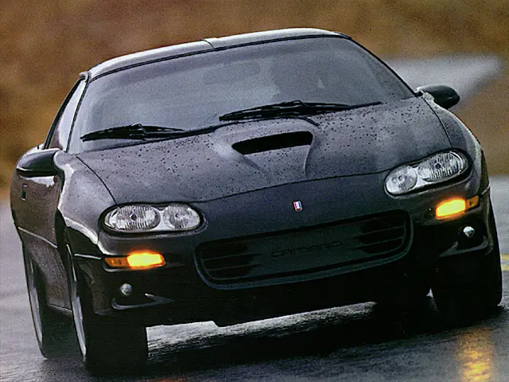
1999
Changes for 2000 were also largely cosmetic in nature. Monterey Maroon Metallic was added as an optional color, similar to the previously available Medium Patriot Red. The SS, however, was not available in this color. The black exterior color was now renamed Ebony. Previously, all V8 powered models had side mirrors painted in this color. A new four-spoke steering wheel, as found in other GM models of the time, was introduced to replace the two-spoke steering wheel dating back to the 1993 models. New 10-spoke 16-inch wheels became available, but the older 5-spoke wheels were still optional. The base models came with 16-inch steel wheels with hubcaps. The 3.8 L (231 ci) V6 and the 5.7 L (346 ci) LS1 V8 engines continued with no changes.
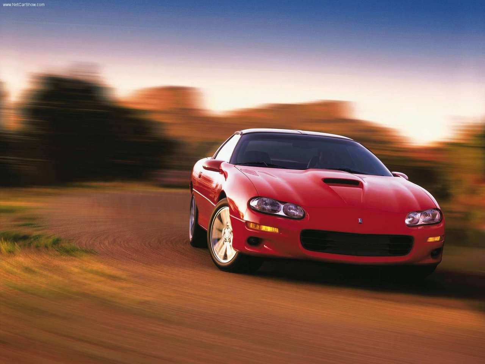
2000
2001 proved to be the lowest production year for the Camaro with 29,009 units built. This was partially due to production ending earlier than usual to begin work on the 35th Anniversary models commemorating 35 years of the Camaro. The Z28 and SS models received the intake manifold from the LS6 engine, used on the Z06 from 2001 to 2004 and the first generation of the Cadillac CTS-V from 2004 to 2005. This change also resulted in a revised camshaft profile and removal of the EGR system. Chevrolet also introduced a new slave cylinder for the clutch assembly that was superior to the design of previous years, as well as an LS6 clutch in manual models. Accordingly, the engine power output was increased to 310 hp (231 kW) for the Z28 and 325 hp (242 kW) for the SS which also added a power steering cooler. SLP Engineering reintroduced the RS model this year, which included rally stripes and stock cold air intake system along with the Z28 take-off exhaust from their SS conversions.
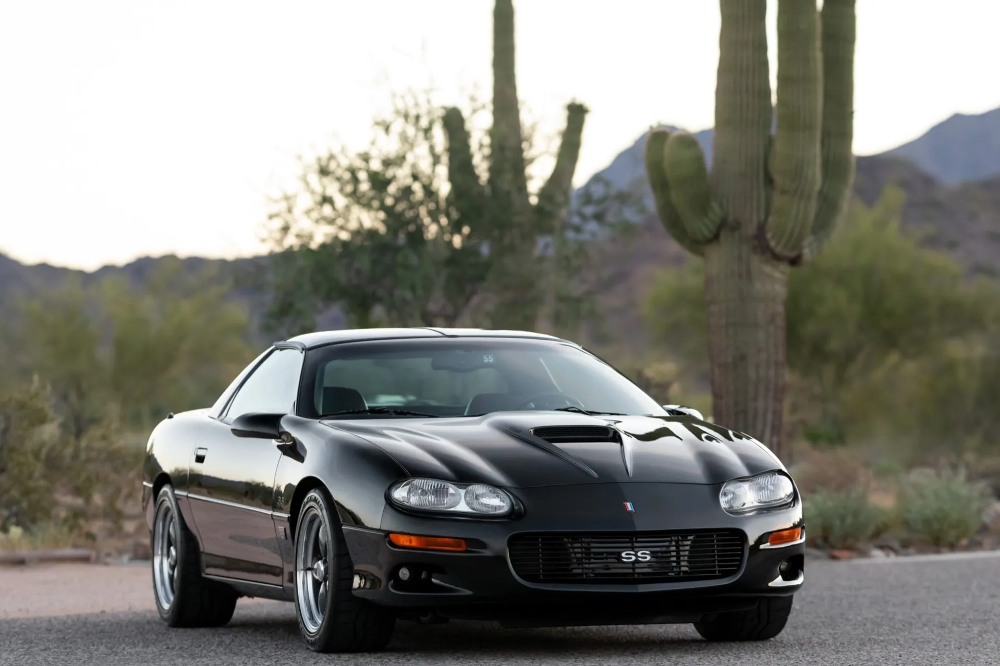
2001
The final fourth-generation Camaro was built on 27 August 2002 after which the Boisbriand plant, located in the province of Quebec just outside of Montreal then closed down. Total production for 2002 was 42,098 units. GM's Performance Division unveiled a Z28 show vehicle at the 2002 Woodward Dream Cruise as a send off for the Camaro's 35-year heritage. It emulated the 1960s and 1970s Penske-Sunoco stock TransAm race team vehicles. The 35th Anniversary trim package was also available for the SS.
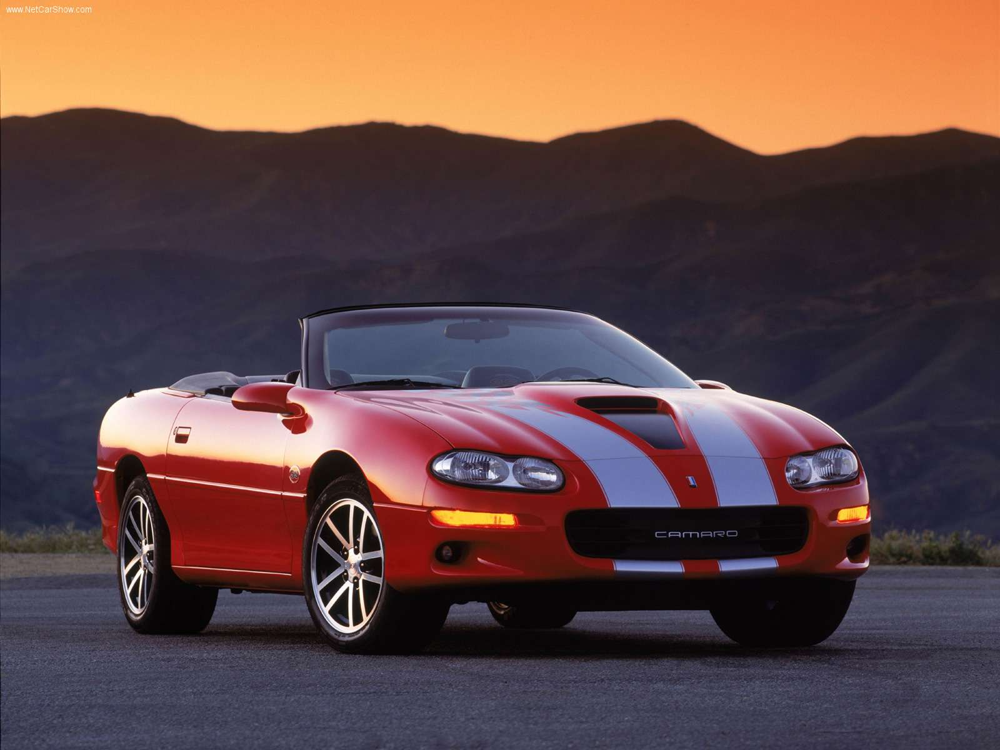
2002
Fifth-GEN
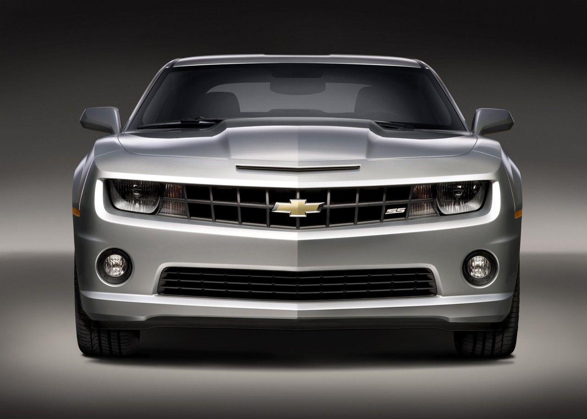
By spring 2005, the first concept car of the fifth-generation of the Camaro was in development. Several sketches of both the exterior and interior were drawn to show how the car was going to look; those sketches were shown months later to the public. Once sketches were finished, the Camaro was constructed as a clay model which was completed by fall 2005 and was shown to the public in early 2006. After the public introduction of the concept cars, Chevrolet started constructing several camouflaged test mules of the Camaro which were manufactured by Holden costing about US$250,000 each. These vehicles were used for crash testing, test driving, and handling extreme weather conditions such as in Canada, Arizona, and Australia. By January 2008, Chevrolet announced that the test mules will not be camouflaged and various images of the Camaro were released in the same year, including pre-production models.
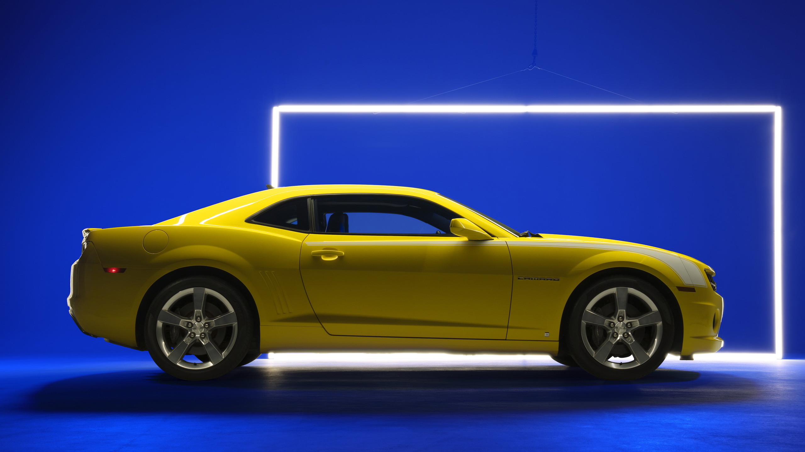
development
On August 10, 2006, GM Chairman and CEO Rick Wagoner announced that the company would build an all-new version of the Chevrolet Camaro based on the award-winning concept that debuted at the 2006 Detroit auto show in January 2006. The new Camaro was originally scheduled to begin production in 2008 and to go on sale in the first quarter of 2009 for the 2009 model year, but General Motors stated in March 2008 that production would be delayed until February 2009 with the Camaro going on sale in the spring of 2009 for the 2010 model year. Chevrolet General Manager Ed Peper stated that the new Camaro "will appeal to both men and women, and unite customers with fond memories of previous Camaros with those who first experienced a Camaro" when the concept was unveiled in January 2006. Bob Lutz's post on the GM FastLane Blog for August 10, 2006 thanked everyone in the blogosphere who commented and offered feedback on the Camaro. Following the development of the Zeta architecture and because of its position as the GM global center of RWD development, GM Holden in Australia led the final design, engineering, and development of the Camaro. Original plans for the car included sharing the chassis with the Impala, which was to be switched to the Zeta platform. However, a 2007 energy law drastically changing the Corporate Average Fuel Economy forced GM to scuttle plans for replacing the W-Body platform of the Impala. The new Camaro was produced at the Oshawa Car Assembly manufacturing plant in Canada. 2,750 jobs would have been lost at the Oshawa manufacturing plant which had been originally scheduled to be closed in 2008; some of these jobs were saved due to the new Camaro's production. This new product program and conversion of the Oshawa plant to a state of the art flexible manufacturing facility represented a US$740,000,000 investment.

2010
For the 2011 model year, the Camaro V6 engine was rated at 312 hp (233 kW) and 278 lb⋅ft (377 N⋅m), an increase of 8 hp (6.0 kW) and 5 lb⋅ft (6.8 N⋅m) from 2010. No engineering changes were made for the increase as GM claimed the 304 hp (227 kW) in the 2010 Camaro's engine was a conservative rating. The Synergy Green color from the 2010 Special Edition would be available on all 2011 model trim levels. A head-up display (HUD) with most of the instrument panel's information would be offered. The HUD is a modified version of the Chevrolet Corvette's display. The main difference is that the version in the Corvette is able to display lateral g-forces, while that amenity is not available on the Camaro. The Japanese model was unveiled in golf courses in Tokyo, Yokohama, Nagoya, Osaka. Japanese models include LT RS and SS RS with 6-speed automatic transmission and the choice of 9 body colors (including new Red Jewel). On October 19, 2010, at 12:00 noon EDT, orders of the Neiman Marcus Edition Camaro Convertible were opened through Neiman Marcus and sold out within three minutes becoming one of the quickest-selling special edition vehicles that General Motors has put out in the market. A total of 75 units were produced and deliveries began in early 2011. The NM Camaro was based on both the 1SS and 2SS models and was equipped with the 6.2 L V8 engine in both options of either manual or automatic transmissions with the equal fuel efficiency and power output of the 2011 Camaro. Accessories that separated this edition from the rest were noticeably that of the exclusive tri-coat exterior paint called "Deep Bourdeaux" with ghosted rally stripes spanning across the hood to the rear deck along with a separate "Silver" painted windshield surround. A two-toned interior leather trim also separated the special edition from the rest with basic black leather with "Amber" interior accents on the front and rear seats as well as on the armrests all with accented "Brilliant Red" stitching on the aforementioned including the center console, steering wheel, and shift knob. A black interior trim kit was placed upon the door panels and dash which replaced the standard "Midnight Silver" that came in standard 2LT and 2SS models. 21-inch five-spoke wheels that were not yet released to the general public for separate purchasing until late 2011 were placed wrapped with Pirelli P-Zero tires that also contained a Brilliant Red strip flowing along the outer edge of the wheel to follow that stitching in the interior. This edition of the Camaro was the only batch of units that were to follow trimming keys of that from the 2007 Camaro Convertible Concept with the Silver painted Window surround, interior leather trim placements, and wide spoke wheels. No Camaro Convertibles produced from the factory ever provided a different color windshield surround other than the produced body color. Production of the 2011 Camaro Convertible began on January 31, 2011, in Oshawa, Ontario, where the coupe was assembled. It arrived in dealerships in February, and is available in both base and SS versions like the coupe. US models include a choice of V6 and V8 (SS only) engines, Tremec TR-6060 6-speed manual or Hydra-Matic 6L50 6-speed automatic transmission, and went on sale in 2011–12. Japanese models include a choice of four base colors (silver ice metallic, black, victory red, and summit white) and two premium (rally yellow, inferno orange metallic) body colors. They went on sale on 15 July 2011.
2011
Changes to the 2012 Chevrolet Camaro include the introduction of the 323 hp (241 kW) 3.6 L direct injection LFX V6 engine replacing the outgoing V6 engine, a new FE4 suspension package for SS coupe (retuned front and rear dampers, new solid front (23 mm) and rear (24 mm) stabilizer bars, 20-inch aluminum wheels with P245/45R20 front and P275/40R20 rear tires (from the SS)), a revised instrument panel appearance (new instrument graphics and trim), a new steering wheel design with improved ergonomics, a power lift feature for the front passenger seat, a new Rear Vision Package (a rearview camera system and an auto-dimming mirror to the existing Rear Park Assist feature), a new rear spoiler as standard, taillamps from RS appearance package option becomes standard for all vehicles. Crystal Red Tintcoat replaces Red Jewel as an exterior color. Changes to the RS package include a new, body-color 'sharkfin' antenna. The 45th Anniversary Special Edition is based on 2LT and 2SS for both coupe and convertible body styles, with a unique rally stripe in red and silver on the hood and deck, Carbon Flash Metallic body color, badges located beneath the front fender emblems, new-design 20-inch wheels in dark silver, fog lamp and taillamp bezels finished in dark silver, RS-style taillamp lenses, standard rear spoiler and HID headlamps, body-color roof molding, Jet Black interior with leather-trimmed seats featuring the 45th Anniversary logo, white instrument panel and door trim inserts with the 45th Anniversary logo on the instrument panel, red, white and blue stitching on the seats, steering wheel, shift knob/boot, door armrests, and console lid; as well as 45th Anniversary logo on the steering wheel and sill plates. The 45th Anniversary Special Edition was unveiled in Camaro5 Fest II in Arizona. Japanese models went on sale in January 2012. Early models included coupe (LT RS, SS RS), convertible, 45th Anniversary Special Edition. Unveiled at the 2011 Chicago Auto Show, the ZL1 is a high-performance variant of the Camaro SS. At least 30 percent of the parts on the ZL1 are exclusive to the model. The car features a 6,162 cc (6.2 L; 376.0 cu in) LSA V8 engine with a 1.9 L (120 cu in) supercharger which produced a maximum boost pressure of 7 psi (0.48 bar). The engine has a power output of 580 hp (588 PS; 433 kW) at 6,000 rpm and 556 lb⋅ft (754 N⋅m) of torque at 4,200 rpm. Power is delivered to the rear wheels by either a six-speed manual (TR-6060) or a 6L90 automatic transmission. The manual transmission has a stronger output shaft, a more robust rear housing, and an additional mainshaft roller bearing to provide 30% more torque capacity than the automatic transmission used in the Camaro SS. To improve shift quality, there are triple synchros in some gears and a revised linkage. A new dual-mass flywheel is bolted to a high-capacity twin-disc clutch. The automatic transmission has additional clutch plates, a strengthened output shaft and is programmed with three operating modes (Drive/Sport/Manual). The ZL1's power is complemented by exclusive performance technologies, including the third generation of Magnetic ride suspension and Performance Traction Management. Brembo supplied the braking system having six-piston calipers at the front and four-piston calipers at the rear. A duct system delivers air from the grille to the hard-working rotors. The 20-inch forged aluminum wheels are fitted with second-generation Goodyear Eagle F1 Supercar tires (size 285/35ZR-20 at the front and 305/35ZR-20 at the back). Damping is provided by Magnetic Ride Control units. This system can sense the need for a damping correction 1,000 times per second and make that change in only five milliseconds. The Performance Traction Management (PTM) system was originally engineered for the Corvette ZR1. In addition to modulating engine torque for optimum launch performance in manual-equipped ZL1s, PTM also varies the traction control and suspension damping as needed. The five available modes are for wet, dry, sport with or without stability control, and race-driving conditions. Additional track-ready features standard on the Camaro ZL1 include coolers for the engine, transmission and rear differential, cooling ducts for the Brembo brakes, and a high-performance fuel system delivering fuel to the LSA engine under any performance-driving condition. The ZL1's rear axle includes a high-capacity cast-iron-case differential, large asymmetrical half shafts, and extra-heavy-duty universal joints. To keep the lubricant temperature in line, there's an oil-to-oil heat exchanger built into the bottom of the differential. Transmission fluid circulates through that heat exchanger and through the radiator to drop operating temps by more than 100 °F (38 °C). In addition, the engine is fitted with the same oil-to-coolant heat exchanger used in the Corvette ZR1. The ZL1 has a deeper oil pan, a longer pickup, and a higher-capacity pump than the SS.
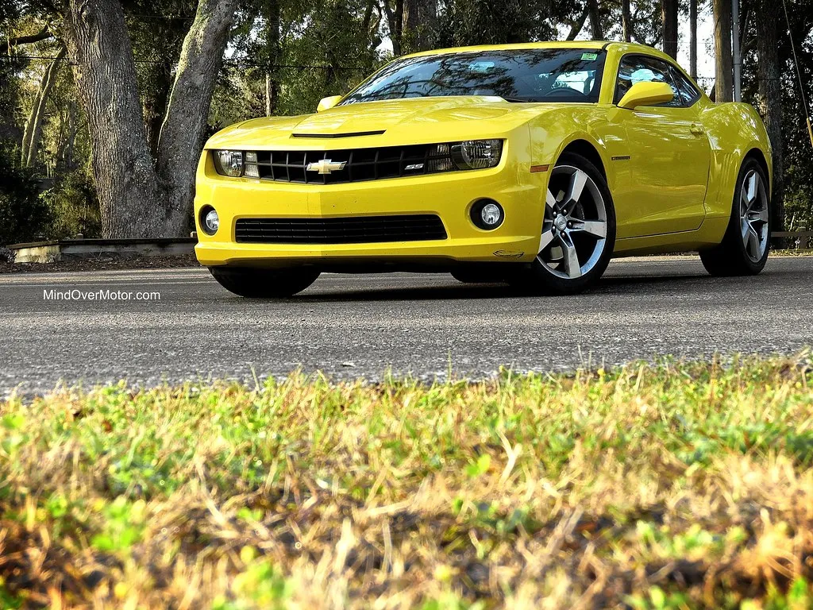
2012
The 1LE package was offered on 1SS and 2SS coupe models, with an exclusive Tremec TR-6060/MM6 6-speed manual transmission with a standard air-to-liquid cooling system, 3.91 geared limited slip differential, exclusive monotube rear dampers, 27-mm solid front stabilizer bar, 28-mm solid rear stabilizer bar, higher-capacity rear-axle half shafts, strut tower brace, ZL1-based 20 x 10-inch front and 20 x 11-inch aluminum wheels, 285/35ZR20 Goodyear Eagle Supercar G:2 tires front and rear (identical to the front tires for ZL1), ZL1 wheel bearings, toe links and rear shock mounts; ZL1 high-capacity fuel pump and additional fuel pickups, matte black hood, black front splitter and rear spoiler, 10-spoke ZL1-based wheels; ZL1 flat-bottom steering wheel trimmed in sueded microfiber, short-throw shifter from the ZL1 trimmed in sueded microfiber. The RS package (available for LT and SS models) added 20-inch wheels, body-color roof moldings and antenna, and high-intensity discharge headlamps. Changes to the SS models included standard variable-effort electric power steering, optional Recaro bucket seats, and an optional dual-mode exhaust system on manual transmission-equipped models. Both features were introduced on the Camaro ZL1. Exterior colors include Summit White, Black, Crystal Red Tintcoat, Victory Red, Rally Yellow, Inferno Orange Metallic, Ashen Grey Metallic, and Blue Ray Metallic. The convertible top color choices include black and beige. The Camaro has a power output of 426 hp (318 kW) when equipped with the 6-speed manual transmission, which is reduced to 400 hp (298 kW) when the car was equipped with the 6-speed automatic transmission.
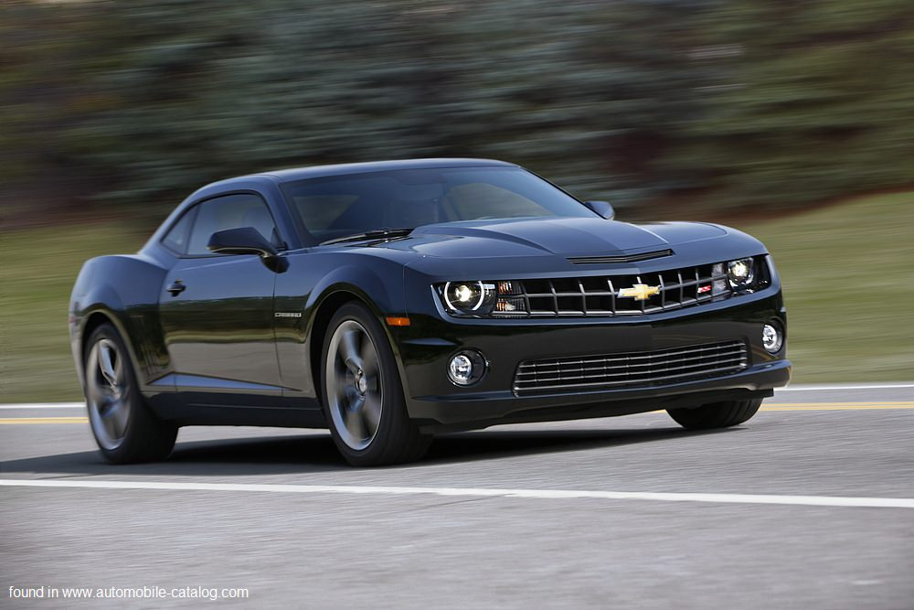
2013
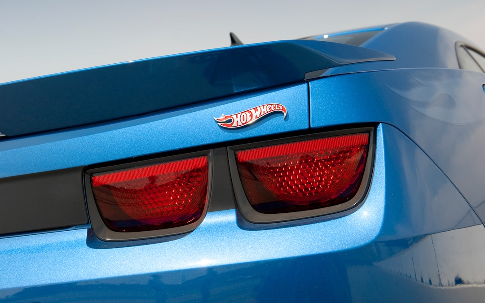
HotWheels Special Edition
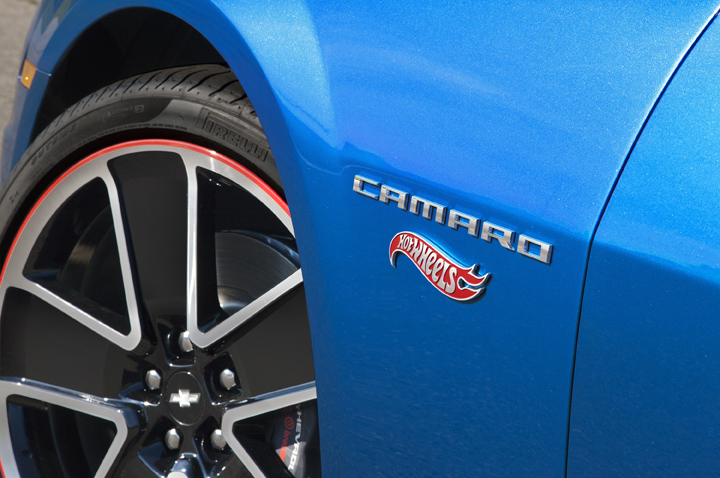

The Camaro Hot Wheels Special Edition is a special variant of the Camaro available in coupe and convertible body styles, with a choice of 2LT (V6) and 2SS (V8) trims with a ZL1 appearance package.The Hot Wheels Edition was unveiled at the 2012 SEMA Show, followed by the 2013 Indianapolis 500. Production began in the first quarter of 2013, and orders began in October 2012. Japanese models went on sale in limited quantities (10 units in total), which included Kinetic Blue Metallic body color, black 20-inch wheels, HOT WHEELS decal stripe, exclusive rear spoiler, front leather seats with HOT WHEELS embroidering, engine cover in black, premium floor mat and the LFX V6 engine.
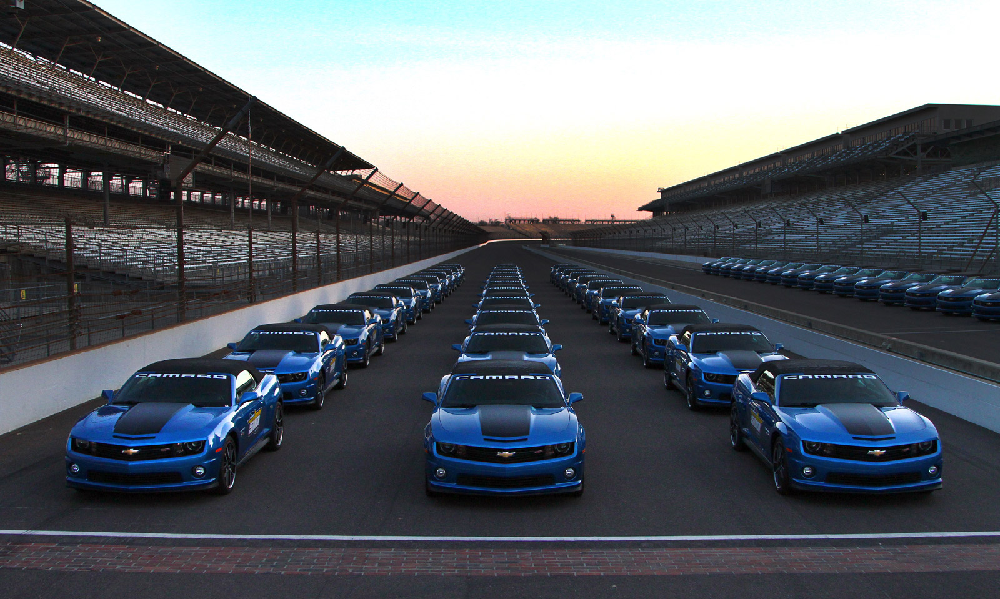
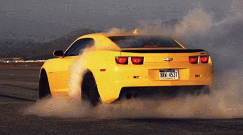
ZL1
Unveiled at the 2011 Chicago Auto Show, the ZL1 is a high-performance variant of the Camaro SS. At least 30 percent of the parts on the ZL1 are exclusive to the model. The car features a 6,162 cc (376 cu in) LSA V8 engine with a supercharger which produced a maximum boost pressure of 7 psi (0.48 bar). The engine has a power output of 580 hp (588 PS; 433 kW) at 6,000 rpm and produces 556 lb⋅ft (754 N⋅m) of torque at 4,200 rpm. Power is delivered to the rear wheels by either a six-speed manual (TR-6060) or a 6L90 automatic transmission. The manual transmission has a stronger output shaft, a more robust rear housing, and an additional mainshaft roller bearing to provide 30% more torque capacity than the automatic transmission used in the Camaro SS. To improve shift quality, there are triple synchronizer rings in some gears, and a revised linkage. A new dual-mass flywheel is bolted to a high-capacity twin-disc clutch. The automatic transmission has a strengthened output shaft and is programmed with three operating modes (Drive/Sport/Manual).
The ZL1 has a so-called Magnetic ride suspension and a performance-oriented traction management system. Brembo supplied the braking system having six-piston calipers at the front and four-piston calipers at the rear. A duct system delivers air from the grille to the brake rotors. The 20-inch forged aluminum wheels are fitted with Goodyear-made 285/35ZR-20 front and 305/35ZR-20 rear tires. Damping is provided by Magnetic Ride Control units. This system can sense the need for a damping correction 1,000 times per second and make that change in five milliseconds.[62]
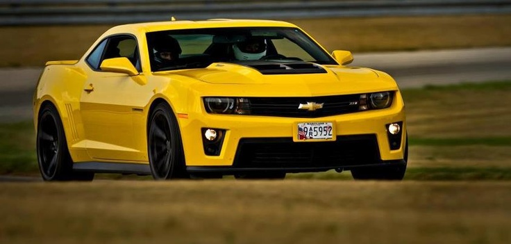
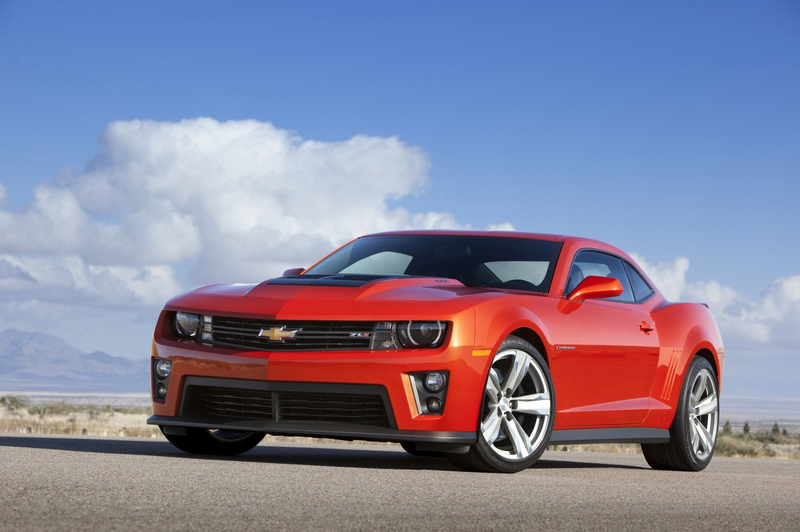
Changes for the 2014 model year include a redesigned front and rear end in corporative new head and tail light assembly, resulting in a wider, lower, more contemporary appearance, and a front fascia featuring a wider lower opening as well as a narrower upper opening that also updates the appearance of the iconic “halo ring” HID headlamps on the Camaro RS package. Other additions include a functional hood vent on the Camaro SS and optional Recaro seats with microfiber suede inserts for the SS and ZL1 packages. The Head-Up Display and Driver Information Center were also now in color display for the 2LT, 2SS and ZL1 models. US models of the 2014 Camaro arrived at Chevrolet dealers later in 2013. The Camaro Z/28 was expected to appear at track events across the United States in spring 2014. European Camaro convertible and coupé included new MyLink-connected radio, and were set to arrive at Chevrolet dealerships at the end of 2013.
2014 Facelift

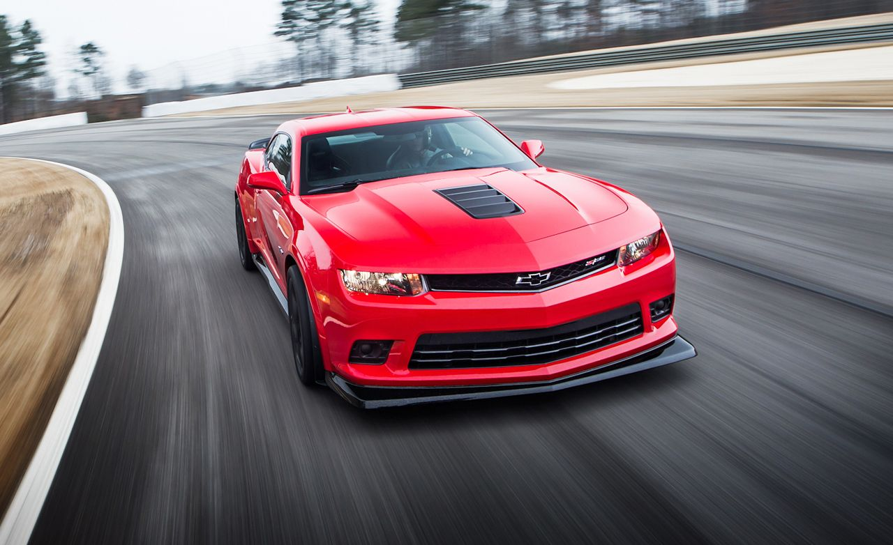
2014 Z28 Compared with 2013 ZL1

Sixth-GEN
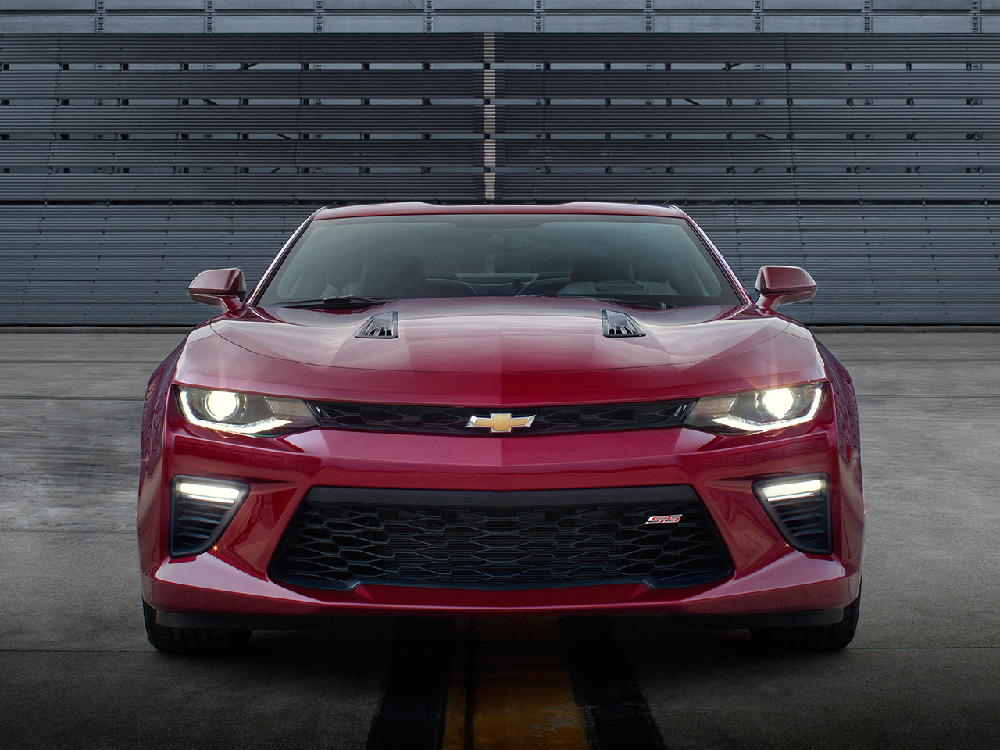
Summary
The sixth-generation Chevrolet Camaro is an American pony car.[11][12] Produced by automobile manufacturer Chevrolet, it was first introduced to the public on May 16, 2015. Sales started in 2015 for the 2016 model year. The Camaro now utilizes the GM Alpha platform shared with the Cadillac ATS and CTS[13] and features MacPherson struts in front, rather than the former multi-link setup. General Motors claims that 70 percent of architectural components in the new Camaro are unique to the car.The sixth generation of Camaro saw production return to the United States as the fourth and fifth-generation models had been assembled in Canada.
Like its predecessor, the sixth generation of the Camaro is available in coupé and convertible body styles. Compared to the previous generation, it is 2.3 in (58 mm) shorter, 0.8 in (20 mm) narrower and 1.1 in (28 mm) shorter in height. With similar equipment and engine, it is also more than 200 lb (91 kg) lighter.
Production of the sixth-generation Camaro ended in December 2023.
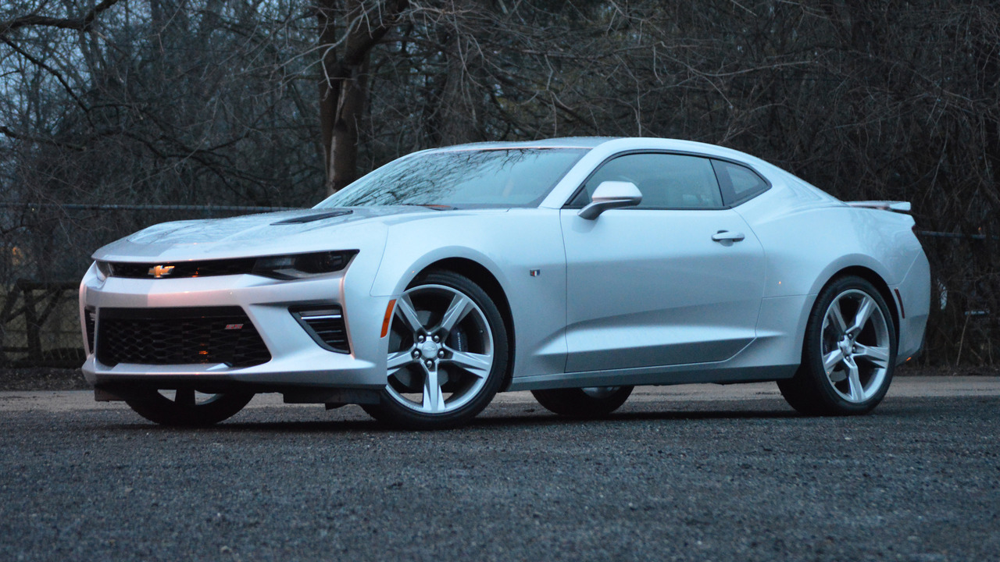
SS
Chevrolet reports the SS capable of 455 horsepower (339 kW; 461 PS) and 455 lb⋅ft (617 N⋅m; 63 kg⋅m) of torque, performing 0-60 mph (97 km/h) in 4.0 seconds.[22] This model comes in two different trims, the 1SS and 2SS, which are mainly differentiated by their interior features. While the 1SS packs the same power, it lacks the leather heated/ventilated seats of the 2SS. The 2SS includes some other features left out in the 1SS like interior spectrum lighting, heated steering wheel, blind-spot monitoring, Bose audio, and wireless charging.[22]
Both SS trim levels allow the addition of the available 1LE package which adds the Magnetic Ride Control FE4 suspension derived from the ZL1, electronic limited-slip differential with 3.73:1 ratio, 20-inch forged wheels with Goodyear Supercar 3 285/30R20 front tires and 305/30R20 rear tires, Brembo six-piston front brake calipers with two-piece 14.6-inch rotors, track-cooling package, Recaro front seats with Alcantara and leather upholstery, Alcantara steering wheel and short-throw shifter, dual-mode exhaust, and a color heads-up display. In 2019 and subsequent years, the new 10L80 10-speed automatic transmission was offered in the SS trim level.
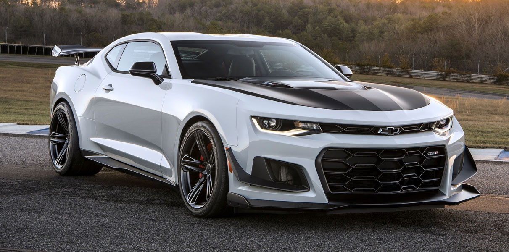
ZL1 1LE Extreme
The ZL1 is an ultra high-performance model introduced in 2017 at the top of the Camaro lineup. The ZL1 is powered by a 6.2 L LT4 supercharged V8 producing 650 horsepower (485 kW; 659 PS) and 650 lb⋅ft (881 N⋅m; 90 kg⋅m). The powertrain also features 11 total heat exchangers for optimized cooling. It features a lower grille opening for improved cooling, a new front splitter, and a carbon hood insert which removes hot air from the engine compartment. It also features wider front fenders to accommodate wider tires for improved handling, 20-inch forged aluminum wheels, unique rockers, and Magnetic Ride suspension. The ZL1 also features Brembo brakes with six-piston monoblock front calipers and 15.35-inch two-piece front rotors. The interior features Recaro front seats, as well as a sueded flat-bottom steering wheel and specialized shift knob.
Transmission choices are a rev matching 6-speed manual or a newly developed 10-speed automatic.[6] The 10-speed 10L90 transmission was developed in collaboration with Ford. General Motors manufactures its own version in its own factory in Romulus, Michigan. Performance figures include a 0 to 60 mph (0 to 97 km/h) acceleration time of 3.5 seconds, a 1/4 mile time of 11.4 seconds at 127 mph (204 km/h). The ZL1's official top speed is 198 mph (319 km/h). The ZL1, along with the SS, were banned for sale in California and Washington due to their brake pads containing toxic metals and asbestos that were banned in California in 2014 and brake pads containing more than 5% of copper have been prohibited starting in January 2021.